freiesMagazin Mai 2009 (ISSN 1867-7991)
Topthemen dieser Ausgabe
Debian GNU/Linux 5.0 „Lenny“ - Der Zustand der Distribution
Dieser Artikel stellt Debian 5.0 „Lenny“ mit einem Fokus auf den Neuheiten dieser Version vor. Die größte unabhängig von Firmen entwickelte Linux-Distribution hat wie immer lange für ihre neue Version gebraucht. Ob sie ihren Qualitätsanspruch erfüllen kann, soll ein wenig untersucht werden. (weiterlesen)
Virtualisierung im Allgemeinen und KVM unter Proxmox VE im Speziellen
Wie können mit Open-Source-Programmen in Firmen oder zu Hause schnell virtuelle Maschinen eingerichtet gebracht werden? Dieser Bericht soll Virtualisierung mit KVM etwas beleuchten und einen gewissen Überblick verschaffen. Vor allem auf das Programm Proxmox VE wird dabei näher eingegangen. (weiterlesen)
Das Netbook-Touchpad: Ein ergonomisches Desaster
Der regelrechte Hype um die kleinen Helfer Netbooks muss in letzter Zeit viele Nutzer in seinen Bann gezogen haben, glaubt man den Verkaufszahlen prominenter Hersteller. In diesem Artikel wird das Acer Aspire One [A 110L] mit seinem nicht immer leicht zu bedienendem Touchpad vorgestellt und alternativen Bedienungsmethoden mit Anlehnung an Vim aufgezeigt. (weiterlesen)
Zum Index
Inhalt
Linux allgemein
Debian GNU/Linux 5.0 „Lenny“
Ausgeflasht: Gnash und Swfdec
RSS-Feeds: Technik und Nutzen
Der April im Kernel-Rückblick
GPL-Lizenzenzschwierigkeiten
Software
Virtualisierung im Allgemeinen und KVM unter Proxmox VE im Speziellen
Geh spielen! - GoPlay zur Suche nach Software einsetzen
Kennwortgedächtnis auslagern mit KeePassX
Kurztest: Bespin
Splitscreens mit Vim
Hardware
Das Netbook-Touchpad: Ein ergonomisches Desaster
Magazin
Editorial
Infos zum Programmierwettbewerb
Leserbriefe
Veranstaltungen
Vorschau
Impressum
Zum Index
Editorial
Chinesische Wochen - Nun auch in Deutschland Am 17. April 2009 unterzeichneten die fünf größten deutschen Internet-Service-Provider (ISP) zusammen mit Bundesfamilienministerin von der Leyen einen Vertrag, um das Netz zu zensieren (Link). Ziel und Aufgabe dieses Vertrages soll die Kooperation der ISP mit dem Bundeskriminalamt (BKA) sein, um unerwünschte Inhalte im Netz zu filtern (Link). Eine rechtliche Grundlage war zu diesem Zeitpunkt nicht vorhanden (Link) (Link). Obwohl Monate zuvor von den Internetprovidern nicht nur Bedenken in punkto Wirksamkeit, sondern auch der rechtlichen Basis dieser Sperren geäußert wurden, ließ man sich auf diesen Vertrag ein (Link) (Link). Über die Gründe darf man spekulieren. Positiv gewendet und mit den Worten einer Arcor-Mitarbeiterin tat man dies, um ein Zeichen zu setzen: ein Zeichen wider die Darstellung von Kindesmisshandlung im Netz. Denn darum geht es bei den unerwünschten Inhalten. Um keine Missverständnisse aufkommen zu lassen: Das Ziel, gegen Kindesmisshandlung und deren Darstellung einzutreten, ist mit voller Überzeugung und Tatenkraft unterstützenswert - allein der seitens von der Leyen und Interprovidern beschrittene Weg ist ein problematischer. Problematisch deshalb, da dass BKA als Ermittler, Staatsanwalt und Richter in einem nicht transparenten Verfahren geheime Listen erstellt. Was, wo, wann und warum etwas vom BKA als Kindesmisshandlung eingestuft wird, muss nahezu allen unbekannt bleiben (Link). Genau hier darf man auch ein Einfallstor für Lobbyisten verschiedener Couleur vermuten, denn was wird zukünftig als nicht erwünscht gelten? Um welche Inhalte wird es dann gehen? Man weiß es heute nicht und kann es auch nur vermuten. Erste Forderungen nach der Sperrungen von potentiell urheberrechtlich verletzenden Seiten wurden aber bereits laut (Link). Kritisch für den Nutzer wird das Ganze aber schon jetzt, da jeder, der zufällig auf so einer gesperrten Seite landet, auch gleich Besuch von der Kripo erwarten dürfte. Anfangs hieß es zwar (als die Provider unterschrieben), dass es keinerlei Weiterleitung von Kundendaten gäbe, die so eine Seite aufrufen würden. Jedoch kommt nun mit dem Gesetzesentwurf zur „Bekämpfung von Kinderpornografie in Kommunikationsnetzen“ doch ein Auskunftsanspruch mit und dem wird von den Providern - vor allem von den fünf Unterzeichnern - sicherlich gerne stattgegeben. Wer also Kunde von Deutsche Telekom, Vodafone/Arcor, Hansenet/Alice, Telefonica/O2 oder Kabel Deutschland ist, kann nicht mehr sicher im Netz surfen, ohne gleich die Polizei vor der Haustür zu vermuten - wenn man es etwas überspitzt ausdrücken möchte. Laut Ankündigung des Gesetzesentwurfs auf der Seite des Bundesministeriums (Link) gesteht man mittlerweile auch die technische Unzulänglichkeit des Vorhabens in punkto Zielerreichung ein. So spricht man auf den Seiten des Bundesministerium für Familie, Senioren, Frauen und Jugend (BMFSFJ) nur noch von einer „Zugangserschwernis“. Leider ändert dieses nichts an der oben geschilderten Problematik. Im Gegenteil: Wir sehen hier die Einführung einer Zensurtelematik, mit der aber gegen Kindesmisshandlung im Netz nichts unternommen wird. Interessanterweise sind sogar die Opfer, die Frau von der Leyen mit dieser Zensur schützen will, gegen diese Maßnahmen. So erklärt Christian Bahls vom Verein “MissbrauchsOpfer gegen InternetSperren” (MOGIS), dass die Zensur eher dafür sorgt, dass die Bürger wegschauen (bzw. zum Wegschauen gezwungen werden). Bahls fühlt sich dabei sogar erneut als Opfer (Link). Was wir gerne gesehen hätten, wäre eine bessere personelle und materielle Ausstattung der Strafverfolgungbehörden. Nur ein Beispiel: CareChild, ein Kinderschutzverein, zeigte anhand einer im Netz bekannt gewordenen Sperrliste aus dem Staate Dänemark Folgendes: Es in westlichen Ländern durchaus und ohne weiteres möglich, Hostingprovider, die im Auftrag eines Kunden Webinhalte mit Kindesmisshandlungen bereitstellen, dazu zu bringen, das entsprechende Material vom Netz zu nehmen - und das in kurzer Zeit (Link). So könnte man schon heute die Inhalte aus dem Netz verbannen und nicht nur einen Vorhang aufziehen. Was hat das Ganze nun mit freiesMagazin zu tun? Wir denken eine ganze Menge, da das Wort „frei“ (abgeleitet von Freiheit) nicht umsonst Teil unseres Namens ist. Und gerade diese wertvolle Freiheit wird nun extrem eingeschränkt. Natürlich muss man nicht dafür kämpfen, dass Webseiten mit dubiosen und illegalen Inhalten für alle verfügbar sind. Aber der Schritt hin zur Zensur von legalen, aber unliebsamen und wie auch immer gearteten kritischen Webseiten ist nicht groß. Daher sollte jeder, der Interesse daran hat, sich weiterhin frei im Netz bewegen zu können, Maßnahmen ergreifen, die das sicher stellen. Dazu zählt zum Beispiel auch die kritische Frage bei dem eigenen Internet-Provider. Und wenn dieser zensiert - und am Ende noch zu den Fünf oben gehört, die freiwillig vorab zensieren wollen - kann man eigentlich nur noch einen Schritt unternehmen und die Kündigung aussprechen. Noch besteht etwas Hoffnung, denn es dauert laut Provider-Aussagen bis zu sechs Monaten, ehe die Infrastruktur entsprechend umgestellt wurde (Link). Zusätzlich ist das Gesetz bisher nur ein verabschiedeter Entwurf und kann immer noch zu Fall gebracht werden. Wir hoffen, dass der Widerstand in der Bevölkerung groß genug ist, damit es in Deutschland nicht zu den ersten Ansätzen einer Zensur kommt, wie sie im globalen Ausmaß schon heute in China besteht (Link). Mit diesen sehr kritischen Worten wünschen wir Ihnen dennoch viel Spaß mit der neuen AusgabeIhre freiesMagazin-Redaktion Links
- http://www.heise.de/newsticker/meldung/136327
- http://www.bmfsfj.de/bmfsfj/generator/BMFSFJ/kinder-und-jugend,did=121760.html
- http://www.tagesschau.de/inland/kinderpornodebatte100.html
- http://www.heise.de/newsticker/meldung/126987
- http://www.heise.de/newsticker/meldung/119197
- http://netzpolitik.org/2009/wir-praesentieren-das-bundestag-gutachten-zur-netzensur/
- http://www.ccc.de/press/releases/2009/20090212/?language=de
- http://www.gulli.com/news/deutsche-netzsperren-2009-04-27/
- http://www.bmfsfj.de/bmfsfj/generator/BMFSFJ/kinder-und-jugend,did=121848.html
- http://www.zeit.de/online/2009/17/netzsperren-missbrauch
- http://www.carechild.de/news/politik/internetzensur_carechild_versuch_blamiert_deutsche_politiker_566_120.html
- http://www.gulli.com/news/kipo-sperren-umsetzung-dauert-2009-04-26/
- http://www.focus.de/digital/internet/china-wieder-mehr-internetzensur_aid_357813.html
- http://www.tagesschau.de/inland/internet130.html
Debian GNU/Linux 5.0 „Lenny“ - Der Zustand der Distribution
von Hans-Joachim Baader Dieser Artikel stellt Debian 5.0 „Lenny“ mit einem Fokus auf den Neuheiten dieser Version vor. Die größte unabhängig von Firmen entwickelte Linux-Distribution hat wie immer lange für ihre neue Version gebraucht. Ob sie ihren Qualitätsanspruch erfüllen kann, soll ein wenig untersucht werden. Redaktioneller Hinweis: Der Artikel „Debian GNU/Linux 5.0 "Lenny" - Der Zustand der Distribution“ erschien erstmals bei Pro-Linux (Link). Am 14. Februar wurde Debian GNU/Linux 5.0 „Lenny“ veröffentlicht (Link). In den Wochen davor mussten die Entwickler noch abstimmen, ob die unfreien Komponenten in der Distribution, hauptsächlich unfreie Firmware aus dem Linux-Kernel, einen Hinderungsgrund für die Freigabe darstellen sollten. Die große Mehrheit entschied sich pragmatisch und erkannte die Tatsache an, dass die Arbeit an der Beseitigung der unfreien Teile stetig weitergeht (Link). Danach war nur noch eine weitere Testversion des Installers nötig, um die langerwartete Veröffentlichung unter Dach und Fach zu bringen. In diesem Artikel werden hauptsächlich die Neuerungen von Debian 5.0 im Vergleich zum Vorgänger beleuchtet. Die Installation und grundlegende Eigenschaften sollen aber auch ein wenig zu ihrem Recht kommen. 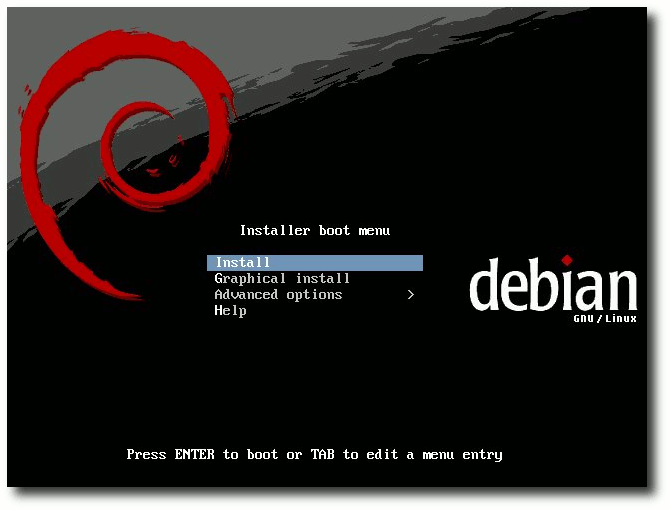Installations-Bootscreen von Debian 5.0.
Debian 5.0
Die Veröffentlichung
Der ursprünglich angestrebte Veröffentlichungstermin wurde zwar wieder um mehrere Monate verfehlt, aber dennoch gelang es den Entwicklern, den zeitlichen Abstand zum Vorgänger mit 22 Monaten nahezu konstant zu halten. Mit diesem langen Veröffentlichungszyklus hebt sich die von der Gemeinschaft, nicht von einer einzelnen Firma getragene Distribution deutlich von den Konkurrenten ab, die pro Jahr ein bis zwei neue Versionen herausbringen. Dies hat Auswirkungen auf den Support. Da eine Debian-Version mindestens zwölf Monate nach der Veröffentlichung des Nachfolgers gewartet wird, ergibt sich ein Support-Zeitraum von mehreren Jahren. Bei Debian 4.0 werden es knapp drei Jahre sein, wenn der Zeitraum nicht sogar verlängert wird. Bei Debian 5.0 ist die Dauer noch nicht absehbar, aber sicher sind mindestens zwei Jahre. Für Unternehmen ist das immer noch zu wenig, aber diese Lücke wird von verschiedenen Dienstleistern gefüllt, die Debian mit oder ohne eigene Anpassungen für längere Zeiträume unterstützen. Der Debian-Distribution wird oft vorgehalten, dass die mitgelieferten Pakete bereits bei der Veröffentlichung veraltet seien. In der Tat war Debian 5.0 bereits seit dem 28. Juli 2008 im Freeze-Modus, was bedeutet, dass zwar noch Fehler korrigiert, aber nur in wenigen Fällen noch neue Versionen zugelassen wurden. Eine Ausnahme ist beispielsweise Iceweasel, die Firefox-Variante von Debian, die mit der zum Zeitpunkt der Veröffentlichung aktuellen Version 3.0.6 von Firefox korrespondiert. Bis zum Ende des Supports für Debian 5.0, dessen genauer Zeitpunkt noch nicht feststeht, werden nun auch nur noch gravierende Fehler korrigiert, aber keine Software-Updates mehr vorgenommen, um überraschende Seiteneffekte durch Änderung der Schnittstellen oder des Verhaltens zu vermeiden. Am Ende des Supportzeitraums wird Debian 5.0 keine Software enthalten, die jünger als drei Jahre ist, abgesehen von einem geplanten Kernel-Update, das für bestehende Installationen aber nicht unbedingt notwendig sein dürfte. Was Kritiker regelmäßig übersehen, dass gerade diese Beständigkeit, verbunden mit einem Ausbleiben von Überraschungen bei Updates, für Unternehmen ein entscheidendes Auswahlkriterium darstellt. Es ist daher kaum ein Zufall, dass sich die Stadt München bei ihrer Migration für Debian entschied. Debian ist im Unternehmenskontext mit 47 % das am häufigsten genutzte freie Server-Betriebssystem und kommt auch auf 30 % der Desktops zum Einsatz, womit es eine führende Rolle spielt (Link). Und das, obwohl Debian gegen die Konkurrenz ihrer eigenen Derivate bestehen muss. Ubuntu und viele andere bauen auf Debian auf.Überblick über die Neuerungen
Die neue Version der Distribution läuft auf elf Architekturen, wobei die Architektur „armel“ gegenüber Debian 4.0 neu ist. Sie soll aktuelle und zukünftige ARM-Prozessoren effizienter nutzen und die zur Zeit noch unterstützte Architektur „arm“ ersetzen. Neu ist auch die Unterstützung der Orion-Plattform von Marvell, die in vielen Speichergeräten verwendet wird. Unterstützte Speichergeräte sind u. a. die QNAP Turbo Station, HP Media Vault mv2120 und Buffalo Kurobox Pro. Zusätzlich werden Netbooks wie der Eee PC von Asus unterstützt. Außerdem wurden Bauwerkzeuge für Emdebian (Link) hinzugefügt, die es erlauben, Debian-Quellpakete auf einer Architektur für andere Architekturen zu bauen und zu verkleinern, um eingebetteten ARM-Systemen zu genügen. Mehr als 23.000 Softwarepakete, die aus über 12.000 Quellpaketen erstellt wurden, werden mit Debian 5.0 geliefert. Der Linux-Kernel beruht auf Version 2.6.26 und enthält SELinux, das jedoch standardmäßig nicht aktiviert ist. X.org ist in Version 7.3 dabei, OpenOffice.org in Version 2.4.1. Aktuell ist allerdings Firefox in der Debian-Version als Iceweasel 3.0.6. Auf dem Desktop stehen unter anderem GNOME 2.22.3, KDE 3.5.10, Xfce 4.4.2 und LXDE 0.3.2.1 zur Auswahl. glibc 2.7 und GCC 4.3.2 bilden die Basis des Software-Archivs. Die Paketbeschreibungen wurden internationalisiert und werden in der eingestellten Systemsprache angezeigt, sofern eine Übersetzung existiert. Debian 5.0 unterstützt die Virtualisierung mit dem Hypervisor Xen sowohl als Host (Dom0), als auch als Gast (DomU). KVM ist als Kernel-Bestandteil ohnehin mit dabei. Weitere wichtige Pakete für Server- und Entwicklersysteme sind PostgreSQL 8.3.6, MySQL 5.0.51a, Apache 2.2.9, Samba 3.2.5, Python 2.5.2 und 2.4.6, Perl 5.10.0, PHP 5.2.6, Asterisk 1.4.21.2, Nagios 3.0.6 und OpenJDK 6b11. Java-Anwendungen können nun im „main“-Archiv der Distribution ausgeliefert werden. Mit der Integration von X.org 7.3 soll sich der X-Server bei der meisten Hardware selbst konfigurieren. Neu eingeführte Pakete erlauben die komplette Unterstützung des NTFS-Dateisystems und die Verwendung der meisten Multimedia-Tasten ohne zusätzliche Konfiguration. Unterstützung für das Adobe-Flash-Format ist über die Swfdec- oder Gnash-Erweiterung verfügbar (siehe „Ausgeflasht: Ein Versuch mit Gnash und Swfdec“). Einige Verbesserungen speziell für Notebooks wurden integriert, wie die CPU-Frequenzskalierung ohne zusätzliche Konfiguration. Für die Freizeit wurden mehrere neue Spiele hinzugefügt. Eine bemerkenswerte Änderung stellt nach Projektangaben die Einführung von „goplay“ dar, einem graphischen Spiele-Browser, der Filter, Suche, Bildschirmfotos und Beschreibungen für Spiele in Debian bereitstellt (siehe „GoPlay zur Suche nach Software einsetzen“). Zur Verbesserung der Sicherheit kann der Debian-Installer bereits vor dem ersten Neustart Sicherheitsupdates installieren. Die Zahl der setuid-Programme wurde reduziert. Sicherheitskritische Pakete wurden mit speziellen Härtungsoptionen von GCC compiliert. Die Installation wurde in der neuen Version weiter verbessert und ist in 63 Sprachen übersetzt. Firmware, die von manchen Geräten benötigt wird, kann über Wechseldatenträger geladen werden. Weiterhin wird die Installation mittels Braille-Zeile unterstützt. Beim Start der Installation stehen der Rettungs- und der Expertenmodus zur Wahl. Der neue Standard-Syslog-Daemon ist „rsyslog“. Bei einem Update eines vorhandenen Systems wird allerdings der vorhandene Daemon beibehalten, sodass jeder, der einen Wechsel wünscht, diesen durch Installation von rsyslog selbst durchführen muss. Außerdem wurde die Unterstützung von UTF-8 durchgehend verbessert.Live-CD
Erstmals werden Live-Medien von Debian offiziell bereitgestellt. Sie sind für die Architekturen x86 und x86_64 verfügbar und kommen in den fünf Varianten GNOME, KDE, LXDE, Xfce und Standard (Minimalsystem) sowie als Rettungs-CD. Alle Einzelheiten darüber und Downloads sind auf der Debian-Live-Projektseite (Link) zu finden. Auch wenn von den Live-CDs keine Installation möglich ist, haben sie dennoch bereits eine große Zahl von Anwendungen gefunden (Link) und sind außerdem als transportables System mit der Möglichkeit zur persistenten Datenspeicherung nutzbar. 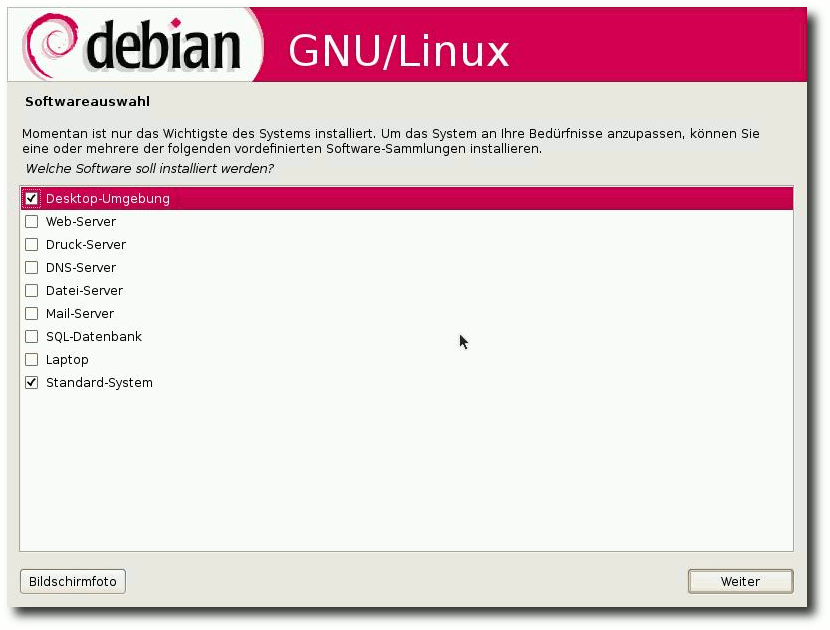Die Softwareauswahl bei der Debian-Installation.
Installation
Neuinstallation
Auch wenn manche Geräte mit vorinstalliertem Debian erhältlich sind, dürfte doch für viele Anwender der erste Kontakt mit Debian die eigene Installation sein. Es stehen ISO-Images für kleine und normale CDs, DVDs und neuerdings sogar Blu-Ray-Medien zur Verfügung. Für die wichtigsten von Debian unterstützten Architekturen gibt es vollständige CD- und DVD-Sätze, auf denen die komplette Distribution enthalten ist, für die weniger gebräuchlichen Architekturen nur noch einen Teil der CDs und DVDs. Weitere Möglichkeiten sind die Installation über ein vom Netz gebootetes Image, von USB-Sticks, Festplatten und teilweise auch noch von Disketten. Es stehen umfangreiche Installationshandbücher auf der Debian-Webseite zur Verfügung (Link), für jede Architektur eines, das jeweils in mehrere Sprachen übersetzt ist. Besucher der Webseite bekommen das Dokument automatisch in ihrer Sprache zu sehen, wenn der Browser korrekt eingestellt und die Sprache verfügbar ist. Man muss dieses Handbuch nicht komplett durchlesen, als Referenz kann man in Zweifelsfällen aber immer darauf zurückgreifen. Die Installation bietet bei den meisten Boot-Medien dieselben Optionen an: Textmodus-Installation, grafische Installation und fortgeschrittene Optionen, unter denen man die Experten-Installation und das Booten in ein Rettungssystem findet. Die Minimalausstattung für eine Installation wird mit 56 MB RAM angegeben. Der textbasierte Installer sollte noch mit deutlich weniger auskommen. Empfohlen werden jedoch für das installierte System 256 MB ohne und 512 MB mit Desktop. Ob man die grafische oder die textbasierte Installation wählt, hat fast keinen Einfluss auf die Funktionalität. Beides sind nur unterschiedliche Frontends für den Debian-Installer, der darüber hinaus auch noch in einem automatischen Modus, also ohne Benutzereingabe, laufen kann. Es wird hier lediglich die grafische Installation gezeigt. Die grafische Installation beginnt mit der Auswahl der Sprache für die Installation. Diese wird zugleich als Sprache des installierten Systems konfiguriert. Die nächsten beiden Bildschirme dienen der Auswahl des Landes und der Tastaturbelegung. Nach dem Nachladen verschiedener Komponenten, das ein wenig dauern kann, will das System den Rechnernamen wissen, dann den Domainnamen. Findet das System bereits über DHCP diese Informationen heraus, dann entfallen beide Schritte. Bevor DHCP möglich ist, kann es jedoch erforderlich sein, Firmware in die Netzwerk-Hardware zu laden. Freie Firmware bringt Debian bereits mit, doch es gibt auch Hardware, die unfreie Firmware benötigt. Da Debian diese in den meisten Fällen nicht mitliefert (selbst in Fällen, in denen es legal wäre), ist es in manchen Fällen erforderlich, diese nachzuladen. Alles Nötige hierfür hat der Installer bereits vorgesehen. Ob WLAN- oder normale LAN-Chips, USB-Geräte oder spezielle Festplattencontroller, wenn der Installer eine benötigte Firmware nicht vorfindet, sucht er selbständig auf Disketten oder USB-Sticks danach (dies ist eine Neuerung in Debian 5.0). Wie man ein passendes Medium vorbereitet, ist im Installationshandbuch beschrieben. Oft ist die Firmware als separates Paket in der Non-Free-Sektion des Archivs verfügbar und nur in wenigen Fällen dürfte es nötig sein, die Downloadseiten des Herstellers abzugrasen. Allerdings muss man dies tun, bevor die Installation beginnt. Eine Auswahl der Zeitzone erfolgt nur, wenn keine Netzwerkverbindung besteht; ansonsten holt der Installer die Zeit von einem NTP-Server. Dann folgt der Teil der Installation, an dem man die meiste Zeit verbringen kann: die Partitionierung. Wer die gesamte Festplatte für Debian verwenden und die Vorgaben des Installers akzeptieren will, der kommt aber auch hierbei mit vier Klicks auf „Weiter“ zum Ziel (wobei man einmal das Formatieren der Festplatten durch Auswahl einer Option bestätigen muss). Als einfachste Variante wird das Anlegen einer einzelnen Partition (mit ext3 als Dateisystem) angeboten, was für Einsteiger, aber auch für viele andere Zwecke völlig ausreicht. Die vier Optionen für die Partitionierung sind „geführt“ mit normalen Partitionen, mit LVM, mit verschlüsseltem LVM und „manuell“. Die „geführten“ Varianten erlauben noch einige Varianten, aber keine großen Änderungen an den Vorgaben. Wählt man dagegen die manuelle Partitionierung, so stehen sämtliche Optionen einschließlich RAID, LVM, Verschlüsselung, Auswahl der Dateisysteme, Mount-Optionen usw. zur Verfügung. Die Benutzerführung ist dabei im grafischen genau wie im Textmodus gewöhnungsbedürftig und etwas umständlich, aber man kommt zum Ziel. Verschwunden sind die Fehler früherer Versionen, die es bisweilen nötig machten, zur Konfiguration von LVM auf die Konsole zu wechseln. Ein kleines Manko der Partitionierung ist, dass beim Bearbeiten einer Partition keine Größenänderung möglich ist - diese lässt sich nur durch Löschen und Neuanlegen der Partition erreichen. Das Einrichten einer verschlüsselten Partition dauert eine Weile, weil dafür die komplette Partition gelöscht (mit Nullen oder Zufallsdaten überschrieben) wird. Da man meist Passwort-Hashes, GPG- und SSH-Schlüssel auf der Platte ablegt und nie wissen kann, wer sich in fünf Jahren daran zu schaffen machen will, ist es hochgradig zu empfehlen, diese Option zu nutzen. Es ist auch möglich, die gesamte Festplatte zu verschlüsseln. In diesem Fall wird bei jedem Systemstart das Passwort verlangt, was für Systeme, die automatisch hochfahren sollen, eher ungünstig ist. Direkt danach folgt die Installation des Grundsystems, die gerade genug Zeit lässt, den nächsten Pott Kaffee zu holen. Anschließend legt man ein Root-Passwort fest. Das System akzeptiert jedes noch so schwache Passwort und überlässt dem Benutzer die Verantwortung für angemessene Sicherheitsmaßnahmen. Auf dem folgenden Bildschirm gibt man den vollständigen Namen des ersten Benutzers ein, danach den Benutzernamen und das Passwort. Dieses Benutzerkonto besitzt keine besonderen Rechte. Es sollte zum normalen Arbeiten mit dem System verwendet werden. Die nächsten Schritte bestehen aus der Konfiguration des Paketmanagers mit dem optionalen Fortsetzen der Installation von weiteren CDs oder DVDs, Auswahl eines Debian-Spiegelservers zum Download weiterer Pakete und, falls gewünscht, der Angabe eines HTTP-Proxys. Danach erfolgt eine grobe Auswahl der zu installierenden Software, die mittels „tasksel“ realisiert ist, das man nach der Installation natürlich auch noch aufrufen kann. Wer eine schnelle Installation möchte, wählt hier alle Punkte ab, denn was man noch installieren will, kann man später hinzufügen. Vorgegeben sind jedoch „Standard“ und „Desktop-System“. Diese Vorgaben führen dazu, dass der Standard-Desktop von Debian installiert wird: GNOME. Wenn man nur die erste CD aus dem CD-Satz der Distribution verwendet, ist GNOME aus Platzgründen auch die einzige Option. Wer GNOME nicht installieren will, sollte mit den alternativen ersten CDs (die es als KDE- und Xfce-Variante gibt) oder mit der ersten DVD booten, oder eben alle Optionen abwählen. Wenn zusätzliche Software ausgewählt wurde, wird diese nun installiert und automatisch konfiguriert. Während dieser Zeit, die je nach Installationsmedium und Softwareumfang ganz unterschiedlich sein kann, muss man nicht zugegen sein, denn es sind keine weiteren Eingaben erforderlich. Die Installation erfolgt noch ganz traditionell in dem Sinne, dass kein vordefiniertes Image auf die Platte kopiert, sondern jedes Paket einzeln entpackt wird. Sie läuft entsprechend langsamer ab als eine Image-basierte Installation. Insgesamt ist die Installation, wenn man weitgehend den Vorgaben folgt, einfach und schnell. Man merkt, dass die grafische Installation eine 1:1-Umsetzung der textbasierten ist. Die Möglichkeit, mehrere Abfragen auf einer Bildschirmseite zusammenzufassen, wurde nicht genutzt. Allein bei der Eingabe des Root-Passworts und dem Anlegen des Benutzers hätte man drei von vier Bildschirmen einsparen können, ebenso an anderen Stellen. Der dadurch verursachte Zeitverlust ist im Normalfall unbedeutend, aber auf sehr leistungsschwachen Rechnern könnte er bemerkbar sein. 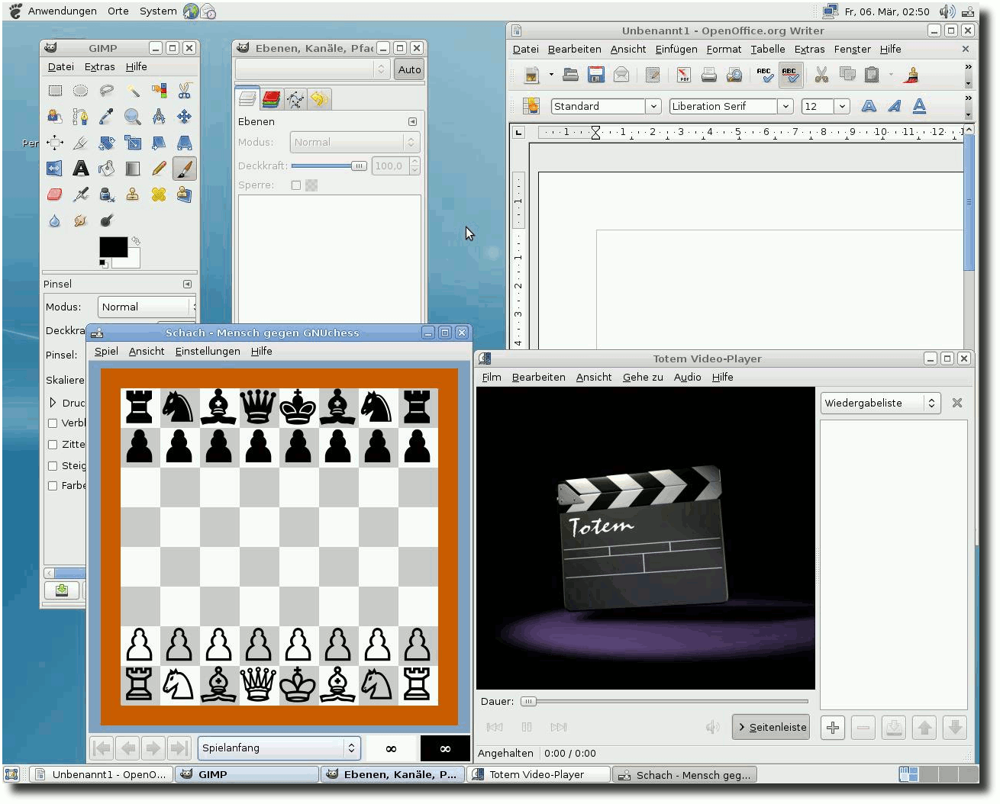Der GNOME-Desktop von Debian 5.0.
Update
Das Update einer bestehenden Debian-Installation ist nicht nur möglich, sondern wird sogar anstelle einer Neuinstallation empfohlen. Dabei gibt es allerdings einige Einschränkungen. So können installierte Pakete aus externen Repositorys (darunter auch „debian-backports“) Probleme bereiten. Dennoch kann man zunächst das Update normal probieren. Sollten Probleme auftreten, kann man die betroffenen Pakete entfernen und später gegebenenfalls in einer neueren Version wieder installieren. Auch ohne externe Pakete wird ein direktes aptitude dist-upgrade meist nicht zum Erfolg führen und beispielsweise viele Pakete zum Entfernen vorschlagen, die man eigentlich behalten will. Die Lösung ist ein Update in zwei (oder mehr) Schritten, bei dem man zuerst apt und aptitude aktualisiert. Das Handbuch empfiehlt aptitude statt apt, da ersteres Abhängigkeiten besser auflösen soll. Natürlich wird ein Update nur von der direkten Vorgängerversion 4.0 „Etch“ unterstützt. Alle Einzelheiten zum Update sind in einem eigenen Kapitel der Release-Notes sehr ausführlich erläutert (Link).Laufender Betrieb
Start
Der Systemstart erfolgt normalerweise mit dem Bootloader GRUB. In der Experteninstallation steht auch GRUB 2 zur Verfügung. Die Startgeschwindigkeit liegt im üblichen Rahmen. Optimierungen der Geschwindigkeit sind bisher nicht erkennbar, zumal immer noch das alte sysv-Init als Init-System eingesetzt wird. Wurde ein Desktopsystem mit GNOME installiert, dann startet Debian 5.0 mit dem Display-Manager „gdm“. Der Login-Bildschirm wurde mit einem Debian-Design versehen. Nach dem Einloggen startet GNOME in Version 2.22.3. GNOME 2.24 wurde erst nach dem Einfrieren der Distribution fertig und daher nicht berücksichtigt. Auf den ersten Blick unterscheidet sich der Desktop nicht wesentlich von dem in Fedora oder Ubuntu. Die Übersetzungen in den Menüs sind vollständig, einzelne Anwendungen jedoch nicht komplett übersetzt, beispielsweise das Programm zur Auswahl der Softwarequellen „software-properties-gtk“. Der Desktop benötigt mit einem Terminalfenster ohne weitere offene Programme 85 MB, bei Fedora wurden unter nahezu gleichen Bedingungen etwa 180 MB ermittelt. Der Unterschied scheint durch das aktivierte SELinux bei Fedora zustande zu kommen, dessen beide Daemonen „setroubleshootd“ und „sealert“ zusammen schon 70 MB permanent belegen. Ferner belegen die einzelnen Komponenten wie Nautilus bei Fedora mehr Platz, möglicherweise ebenfalls wegen SELinux. Die Speicherbelegung ergibt sich aus der ersten Zahl in der zweiten Zeile der Ausgabe von free, die aus dem belegten Speicherplatz (261 MB) minus den allozierten Puffern (12 MB) und dem Cache (164 MB) berechnet wird. Die Angaben hier beziehen sich auf ein frisch installiertes GNOME-System. Bei einem frisch installierten KDE waren gar nur 60 MB belegt. Der Verzicht auf eine 3-D-Konfiguration (so wird unter GNOME kein Compiz installiert) lässt den X-Server mehrere Megabyte weniger Speicher belegen als unter Fedora oder Ubuntu. Auch die nicht standardmäßig installierte Desktop-Suche spart einigen Speicher ein.Desktop
Das Desktopsystem GNOME wurde auf Version 2.22.3 aktualisiert, das einige neue Anwendungen und natürlich zahlreiche Verbesserungen mitbringt, darunter bessere Clients für BitTorrent und VNC sowie eine bessere Oberfläche zum Erstellen und Brennen von ISO-Dateien. Das verbesserte virtuelle Dateisystem soll das Arbeiten mit dem Dateimanager Nautilus schneller und flexibler machen. OpenOffice.org wurde auf Version 2.4.1 aktualisiert. Auf den Soundserver PulseAudio wird in der Standardinstallation verzichtet. Es wird das reine GStreamer-Subsystem installiert. KDE wurde nur moderat aktualisiert: Von Version 3.5.5 auf 3.5.9 und teilweise 3.5.10. An Schriften werden die Liberation-Schriften von Red Hat, DejaVu und diverse (Bitmap-) Standardschriften installiert. Der Standard-Browser unter GNOME ist Epiphany. Einige Plugins, darunter ein Werbeblocker, sind vorinstalliert, aber nicht aktiviert. Auch Iceweasel, die Debian-Variante von Firefox, ist installiert. Für Iceweasel wurde offenbar eine Ausnahme vom Feature-Freeze gemacht und bis zur Veröffentlichung von Debian 5.0 immer auf die neueste Version aktualisiert. Zum Sicherheitsstatus von Mozilla-Produkten haben die Release-Notes allerdings nichts Positives zu sagen: „Die Mozilla-Programme Firefox, Thunderbird und Sunbird (in Debian in Iceweasel, Icedove und Iceowl umbenannt) sind wichtige Werkzeuge für viele Benutzer. Bedauerlicherweise besteht die Sicherheitsrichtlinie der Originalautoren darin, den Benutzer dazu zu drängen, auf neue Versionen der Originalautoren zu aktualisieren, was gegen Debians Grundsatz verstößt, nicht große funktionale Änderungen zusammen mit Sicherheitsaktualisierungen einzupflegen. Wir können es heute nicht vorhersagen, aber während der Lebensdauer von Lenny kann das Debian-Sicherheitsteam an einen Punkt gelangen, an dem die Unterstützung von Mozilla-Produkten nicht länger durchführbar ist und das Ende der Sicherheitsunterstützung für Mozilla-Produkte angekündigt werden muss. Sie sollten das bedenken, wenn Sie Mozilla einsetzen und die in Debian verfügbaren Alternativen in Erwägung ziehen, falls das Fehlen von Sicherheitsunterstützung ein Problem für Sie darstellen könnte.“ Unter KDE ist Konqueror der Standard-Browser. Auch bei diesem ist eine Reihe von Plugins und Erweiterungen standardmäßig installiert. Einige davon, die keinen Anwender stören dürften, sind auch aktiviert. 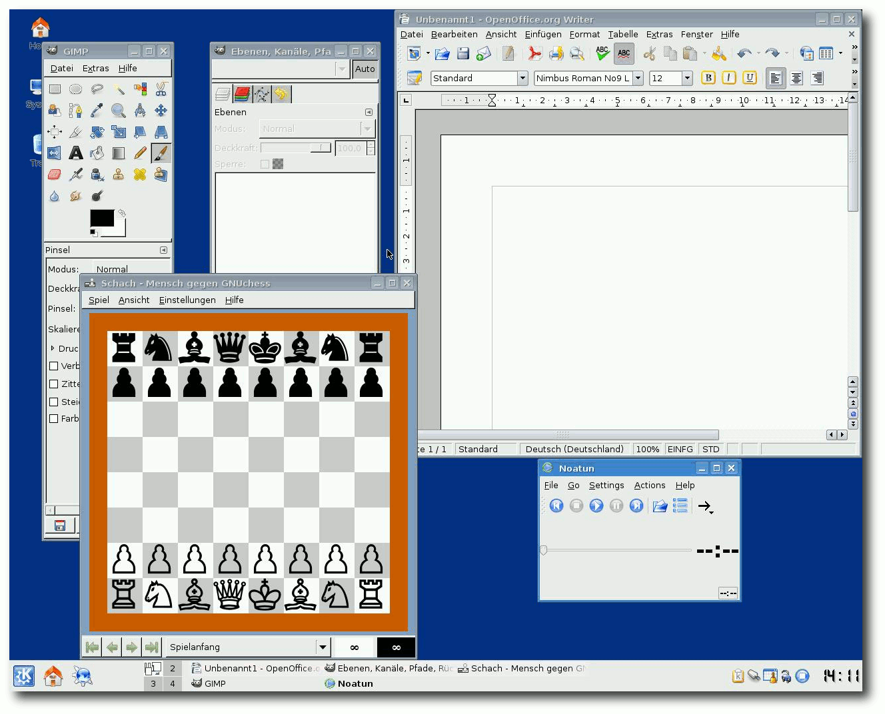Der KDE-Desktop von Debian 5.0.
Der Netzwerk-Manager ist in Debian 5.0 in Version 0.6.6 mit dabei, während andere Distributionen bereits die stark verbesserte Version 0.7.x liefern. Dies ist eine der Stellen, wo der etwas ältere Softwarestand den Benutzern echte Einbußen an Funktionalität bringt. Betroffen sind in erster Linie Programme, die noch eine schnelle Entwicklungsphase durchmachen, was im Umkehrschluss bedeutet, dass sie noch lange nicht ausgereift sind. Andere Programme, die in obsoleten Versionen dabei sind, sind beispielsweise OpenSync und PulseAudio. Debian 5.0 unterstützt Sprachausgaben (hauptsächlich für Benutzer mit Behinderungen). Unter KDE kann der Start eines Programms dazu führen, dass man zur Konfiguration des Text-to-Speech-Managers (KTTSMgr) aufgefordert wird. Das kann man einmal tun oder auch abschalten, sodass keine weitere Konfiguration nötig wird. Die neue Anwendung „goplay“ ermöglicht die komfortable Suche nach Spielen anhand von Name, Typ und Oberfläche. Das Programm erleichtert es, neue Spiele zu entdecken, die den eigenen Vorlieben entsprechen. Es kann selbst aber keine Spiele installieren. Wenn man ein Spiel testen will, muss man den Namen in den Paketmanager übertragen und mit diesem das Spiel installieren.
Innere Werte
Debian 5.0 bringt die Kernelversion 2.6.26 mit zusätzlichen Patches mit. Neu sind die Unterstützung für die Virtualisierung mit OpenVZ, für die es, wie für VServer und Xen, eigene Kernel-Varianten gibt. Der Hypervisor KVM, seit Version 2.6.20 im offiziellen Kernel, steht auf der AMD64-Architektur sowieso zur Verfügung. In der Standardinstallation werden keine Label für Dateisysteme vergeben, demzufolge verwendet auch die Datei /etc/fstab weder Label noch UUIDs, um alle Partitionen unabhängig von den Gerätenamen zu finden. Das macht beispielsweise Ubuntu wesentlich besser. Erstmals kann Debian mit einer vollständig freien Java-Umgebung aufwarten. Um sie zu installieren, sollte man nach „openjdk-6“ suchen. Es handelt sich um den von Sun freigegebenen Code von Java 6, der im Projekt IcedTea um fehlende Teile ergänzt wurde. Auch Softwareentwickler, die mit anderen Programmiersprachen arbeiten, kommen mit Debian voll auf ihre Kosten. Neben den Klassikern Perl, das von Version 5.8 auf 5.10 aktualisiert wurde, Python (jetzt in Version 2.5) und PHP (Version 5.2.6), zu denen jeweils zahlreiche Module paketiert wurden, findet man auch zahlreiche weitere Compiler und Interpreter mit zusätzlichen Bibliotheken und Modulen vor. Für die erfahreneren Benutzer, die an der Kommandozeile effektiver arbeiten als mit grafischen Frontends, bietet Debian eine große Zahl von Programmen, stellt sich aber auch der manuellen Änderung der Konfigurationsdateien nicht in den Weg. Sollte ein Paketupdate erforderlich sein, überschreibt dieses niemals eine geänderte Konfigurationsdatei. Wenn das Update eine geänderte Konfigurationsdatei mitbringt, wird der Benutzer auf diesen Umstand hingewiesen und kann sie untersuchen und entweder sofort oder später bereinigen. Debian hat teils recht aufwendige Konstrukte entwickelt, um die vom System vorgegebene und die von den Nutzern geänderte Konfiguration zu trennen und die Verwaltung so einfach wie möglich zu machen. Oft muss man erst die README-Datei lesen, um sich mit dem Debian-System vertraut zu machen. Es lohnt sich fast immer, eigene Änderungen in die Debian-Vorgaben einzupassen, da man sonst alles selbst machen muss, Sicherheitsupdates eingeschlossen. Die zur Verfügung stehenden Werkzeuge sind zu zahlreich, um sie aufzuzählen, und nur ein kleiner Teil davon ist standardmäßig installiert. Jedes Programm und jede Konfigurationsdatei ist in einer Manpage dokumentiert, was von den Debian-Richtlinien vorgeschrieben ist und auch eingehalten wird. Diese Dokumentation vermisst man bei vielen anderen Distribution schmerzlich. Für die Debian-Entwickler gehören Manpages zu den Dingen, die die Qualität einer Distribution ausmachen. 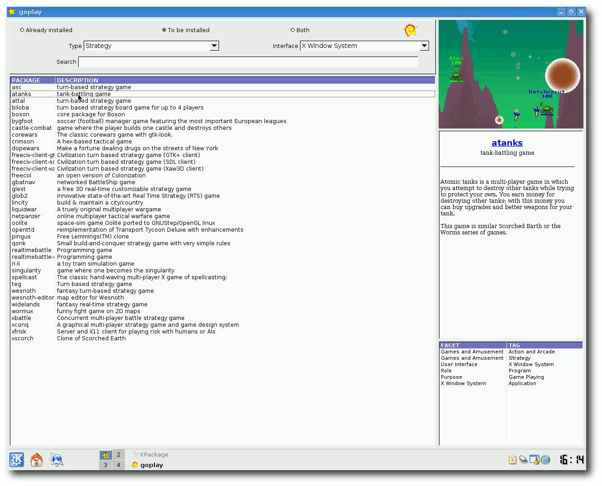Die Spiele-Auswahl mit goplay.
Multimedia
Die Debian-Distribution selbst bringt nur Codecs für freie und nicht durch Patente belastete Multimedia-Formate mit. Immerhin lassen sich einige Videos im MPEG-, Windows Media- und Quicktime-Format abspielen; Audiodateien im MP3-Format werden genauso unterstützt wie die freien Formate, darunter Ogg und Flac. Flash-Videos lassen sich teilweise mit swfdec 0.6.0 und gnash 0.8.4 abspielen. Beide dürften nicht mit allen Flash-Versionen klar kommen, so kann swfdec keine aktuellen YouTube-Videos darstellen, aber zur Not kann man immer noch den proprietären Flash-Player von Adobe nachinstallieren, sofern man auf einer von Adobe unterstützten Plattform arbeitet. Fehlende Multimedia-Codecs können manchmal über das GNOME-Framework nachgeladen werden. Für KDE gibt es keinen entsprechenden Automatismus. Allerdings wird die Codec-Suche von GNOME auch nicht immer fündig. Es lohnt sich daher für alle Debian-Anwender, das Repository von debian-multimedia.org (Link) einzubinden. Danach besteht die Möglichkeit, nahezu jeden erdenklichen Codec nachzuinstallieren. Das löst zwar das Problem der fehlenden Codecs nicht für diejenigen, die keinen Internet-Anschluss haben, für den Großteil der Anwender, die so etwas ihr Eigen nennen, dürfte sich die Multimedia-Situation aber sehr gut darstellen.Konfiguration, Paketverwaltung und Updates
Debian enthält keine eigenen grafischen Programme zur Systemverwaltung. Die Desktopumgebungen KDE und GNOME bringen einige Werkzeuge mit, womit sich, zusammen mit der automatischen Erkennung und Einrichtung der Hardware, bereits ein Großteil aller Aufgaben erledigen lässt. Da auch die Paketverwaltung vollständig grafisch gesteuert werden kann und sich für fast jede Aufgabe ein grafisches Frontend finden lässt, ist durchaus vorstellbar, dass normale Anwender über die Runden kommen, ohne je eine Konsole zu öffnen. Debian steht damit genauso gut da wie andere Distributionen. Die Paketverwaltung kann man unter KDE mit KPackage, unter GNOME mit Synaptic und der Paketquellenverwaltung erledigen. Während unter GNOME eine automatische Prüfung, ob Softwareupdates vorliegen, eingerichtet ist, wird eine solche Funktion unter KDE nicht angeboten. Debian 5.0 ist in der Standardinstallation nicht LSB-konform. Zwar wird LSB 3.2 unterstützt (in Debian 4.0 war es noch LSB 3.1), doch dazu muss man zunächst das Paket lsb-core oder lsb-desktop (das lsb-core einschließt) nachinstallieren. Wie wenig Relevanz die LSB in der Praxis hat, zeigt sich daran, dass es schwierig ist, ein LSB-Softwarepaket im Internet zu finden, das frei herunterzuladen ist. Es fehlt momentan einfach noch zu viel in den LSB-Spezifikationen, besonders im Desktop-Bereich. Dabei könnte Debian LSB-Pakete besonders gut integrieren und sogar deren Abhängigkeiten berücksichtigen. In Ermangelung eines LSB-Pakets wurde die Installation eines RPM-Pakets getestet. Dazu sucht man am besten ein Programm, das noch nicht als Debian-Paket vorliegt. Das sollte nicht schwerfallen, denn auch wenn das Debian-Archiv sehr groß ist, umfasst es doch weniger als zehn Prozent der existierenden freien Software. Man kann beispielsweise Fotoxx nehmen, ein einfaches Foto-Bearbeitungsprogramm. Man findet ein Paket mit Version 6.0 für Fedora 11 auf rpmfind.net. Mit alien wandelt man es in ein Debian-Paket um, das sich anschließend mit dpkg -i fehlerfrei installieren lässt (man sollte nie „rpm“ für die Paketinstallation verwenden, weil dies an der Debian-Paketverwaltung vorbei arbeitet). Das installierte Fotoxx arbeitet nicht, weil die Bibliothek „libfreeimage3“ fehlt. Alien erkennt bei RPM-Paketen also keine Abhängigkeiten. libfreeimage3 ist aber Bestandteil von Debian. Wenn man es nachinstalliert hat, startet Fotoxx, gibt aber Warnungen auf die Konsole, dass es die Programme „exiftool“, „ufraw“ und „printoxx“ nicht findet. Während ufraw wiederum Bestandteil von Debian 5.0 ist, muss man sich bei den anderen beiden erneut auf die Suche begeben. Es ist also möglich, Pakete von anderen Distributionen in Debian 5.0 zu importieren, komfortabel ist es aber nicht. Das Generieren aus dem Quellcode, notfalls mit „checkinstall“, ist oft eine bessere Alternative. 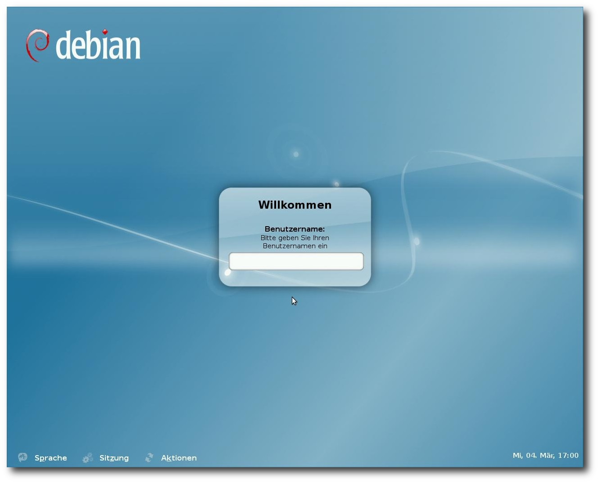Login in GNOME oder KDE - die Display-Manager gdm und kdm sind auf den ersten Blick nicht zu unterscheiden.
Fazit
Debian sieht sich als das „universelle Betriebssystem“ und wird diesem Anspruch in Version 5.0 durchaus gerecht. Universell ist es hinsichtlich der Zahl der unterstützten Architekturen, aber auch hinsichtlich der Einsetzbarkeit. Die Installation kann von Einsteigern bewältigt werden, ohne Experten einzuschränken, und Gleiches gilt auch für die spätere Verwaltung und Benutzung des Systems. Im Grafikmodus ist die Installation weniger schön anzuschauen und benötigt mehr Klicks als bei anderen Distributionen. Das beeinträchtigt aber nicht ihre Funktionalität. Die relativ sparsame Ausstattung mit Features sorgt für einen geringen Speicherbedarf in der Standardinstallation. In dem nicht zu lösenden Konflikt zwischen Aktualität und Stabilität setzt Debian andere Prioritäten als die meisten anderen Distributionen. Dies, und die Unterstützung von so vielen Architekturen, führt dazu, dass neue Debian-Versionen nicht so häufig erscheinen können und die Software etwas älter ist. Das heißt aber nicht, dass sie unbenutzbar ist; so manche Unternehmensdistribution ist mit weitaus älterer Software noch im Einsatz. Selbst diejenigen Benutzer, die immer das Neueste haben wollen, kann Debian im Prinzip bedienen. Wer allerdings den Testing- oder Unstable-Zweig der Distribution einsetzt, muss mit erhöhtem Wartungsaufwand rechnen, denn nicht immer läuft die Software aufgrund neuer Funktionen stabil. Die meisten Benutzer können mit dem stabilen Distributionszweig auskommen, in den man in Einzelfällen bei Bedarf Aktualisierungen einbaut. Dies geschieht vorzugsweise über backports.org (Link), was den Wartungsaufwand minimiert. Zusammen mit dem Ausbleiben von Überraschungen bei Paketupdates stellt das für viele Anwender eins der besten Argumente für Debian dar. Denn grobe Schnitzer in der Paketverwaltung, wie sie sich gerade Fedora, Ubuntu und OpenSuse schon geleistet haben, gab es bei Debian bisher nicht. Es gibt lediglich einen wunden Punkt in der Paketverwaltung. Merkwürdig, wenn nicht fragwürdig, bleibt die Duplizierung der Verwaltung mit apt und aptitude. Zwar ist es nicht möglich, durch wechselweise Verwendung beider Programme das Paketsystem zu beschädigen, aber beide verwenden teils unterschiedliche Statusinformationen, was unter Umständen zu Verwirrungen führen kann. Ein kleinerer Kritikpunkt ist auch das Fehlen einer automatischen Benachrichtigung über Paketupdates in KDE. Dass KDE 4.x bisher in Debian nicht berücksichtigt wurde, ist hingegen die Konsequenz des selbstgesetzten Qualitätsanspruches von Debian. KDE 4.2 hätte ihn vielleicht erfüllen können. Doch um noch in Debian 5.0 Einzug zu halten, hätte KDE 4.2 ein halbes Jahr früher erscheinen müssen. Links- http://www.pro-linux.de/berichte/print/debian50.html
- http://www.pro-linux.de/news/2009/13803.html
- http://www.pro-linux.de/news/2008/13636.html
- http://www.heise.de/open/Trendstudie-Open-Source--/artikel/126682/8
- http://www.emdebian.org/
- http://debian-live.alioth.debian.org/
- http://live.debian.net/manual/html/ch12s02.html
- http://www.debian.org/releases/stable/installmanual
- http://debian.org/releases/lenny/releasenotes
- http://debian-multimedia.org/
- http://www.backports.org/
| Autoreninformation |
| Hans-Joachim Baader befasst sich seit 1993 mit Linux. 1994 schloss er sein Informatikstudium erfolgreich ab und machte die Softwareentwicklung zum Beruf. Seit 1995 arbeitet er freiberuflich. Daneben ist er einer der Betreiber von Pro-Linux.de. |
Ausgeflasht: Ein Versuch mit Gnash und Swfdec
von Thorsten Schmidt Was erwartet den Nutzer Freier Software, wenn er das proprietäre Flash von seinem Computer verbannt und stattdessen auf die freien Alternativen Gnash und Swfdec setzt? Ein kleiner Versuch in zehn Schritten aus Perspektive eines ahnungslosen Nutzers.Vorgeschichte
Gnash und Swfdec sind als Reaktion auf die Vorherrschaft des von Macromedia entwickelten, dann von Adobe übernommenen, proprietären Flashformats im WWW entstanden. Gnash im Jahr 2005 als „a new GNU project to build a media player that's compatible with Macromedia „Shockwave Flash“ standards and plays common „.swf“ files“ (Link). Swfdec zog kurze Zeit später nach und will im Wesentlichen dasselbe erreichen. Aus der Anküngigung einer frühen Veröffentlichung: „Swfdec is a swf rendering library (Flash) for Unix based on libart available under the terms of the LGPL. It supports playback of most flash animations“ (Link).Gegenwart
Beides sind also Flash-Player, soviel darf der ahnunglose Nutzer annehmen. Gnash unterstützt zurzeit SWF v7+ (Shockwave Flash) und soll laut eigener Angabe das Schauen von Videos auf Youtube.com und Lulu.tv unterstützen (Link). Ähnliches trifft für das Swfdec-Projekt zu (Link).Wo bekommt man's her?
Um Gnash oder Swfdex zu benutzen, tut man gut daran, zunächst alle Firefox-Instanzen und -prozesse auf seinem Rechner zu beenden, bevor man im ersten Schritt den Adobe-Flashplayer von seinem Rechner deinstalliert. Hat man den Flashplayer über das Paketmanagement installiert, dann deinstalliert man selbigen auch wieder darüber. Hat man den Flashplayer manuell installiert, sollte man zuvor im Terminal mit# updatedbdie lokale Datenbank aktualisieren, um anschließend mit
$ locate libflashplayer.soden Ort zu suchen, an dem sich das Plugin befindet. Dies wird höchstwahrscheinlich das Verzeichnis ~/.mozilla/plugins/ sein. Danach einfach die darin befindliche Datei libflashplayer.so löschen. Anschließend installiert man entweder Gnash oder Swfdec. Auf einem Arch Linux benötigt man in der Hauptsache folgende Pakete mit ihren jeweiligen Abhängigkeiten:
- Gnash: gnash-common (V. 0.8.5-1) und gnash-gtk (V. 0.8.5-1)
- Swfdec: swfdec (V. 0.8.4-1) und swfdec-mozilla (V. 0.8.2-1)
Swfdec Shockwave Flash File name: libswfdecmozilla.so Gnash Shockwave Flash File name: libgnashplugin.so
Versuch in zehn Schritten
Nun will man endlich sehen, was die beiden freien Alternativen zum gegenwärtigen Zeitpunkt darstellen können. Achtung: Da sich beide Projekte in einem frühen Entwicklungsstadium befinden, sollte man die Erwartungen nicht allzu hoch setzen. Der Versuch läuft nun folgenderweise: Ausgesucht wurden zehn verschiedene Webangebote, einige mit Flash-Videos, andere mit Flash-Spielen. Alles ganz wahllos, so wie es ein ahnungsloser Nutzer vielleicht auch tun könnte.Flashgames
playzo.de
Swfdec: Gespielt wird zunächst ein Klassiker „Space-Invaders“ (Link). Das Spiel läuft ruckelfrei und lässt sich problemlos steuern. Mehr lässt sich dazu nicht sagen. Für einen ahnunglosen Nutzer dürfte der Einsatz von Swfdec hier keinen Unterschied zu Adobes Flash machen. Gnash: Dasselbe lässt sich für Gnash sagen: Sound und Grafik werden anstandslos verarbeitet. Über die Steuerung des Spiels gibt es auch nichts Negatives zu berichten.letsdesign.co.uk
Swfdec: Eine Steigerung bietet dann folgende Space-Invaders-Version (Link). Es erweckt zumindest optisch den Eindruck, etwas anspruchsvoller zu sein. Hier war dann auch nach den ersten Schüssen Zwangspause: Zwar lief der Sound weiter, aber das Spiel ließ sich nicht mehr kontrollieren und wirkte wie eingefroren. Gnash: Mit Gnash sieht es schon anders aus. Das Spiel wird geladen und auch die ersten Level konnten einwandfrei durchgespielt werden. 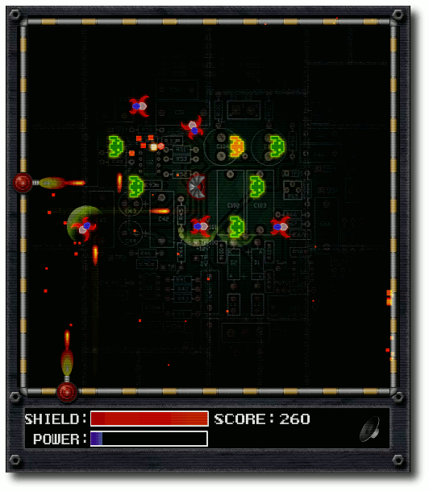Nach ersten Schüssen friert „Space Invaders“ ein.
playit.ch
Swfdec: Als Nächstes wurde das Spiel „Space-Shooter“ getestet (Link). Es sah aus wie eine runde Sache, läuft gut und der Sound stimmt. Gnash: Auch Gnash zeigt das Spiel an. Leider kommt es hier aber zu Verzögerungen zwischen Tastatureingabe (Space-Taste zum Feuern) und der Steuerung im Spiel. Die Steuerung des Schiffes per Maus sowie das Abfeuern der „normalen“ Waffen (linke Maustaste) funktioniert dagegen tadellos. Gleiches gilt für den Sound.Flash-Videos
Tagesschau.de
Swfdec: Als Erstes wird ein Blick auf das öffentlich-rechliche Angebot der ARD geworfen. Hier folgt ein Versuch, sich über die tagesaktuellen Ereignisse zu informieren. Allerdings stellt Swfdec lediglich den Player und dessen Kontrollelemente dar - von bewegten Bildern und Audio keine Spur. Leider. Eine Ausnahme macht die „Tagesschau in 100 Sekunden“ (rechts oben auf der Seite zu finden). Gnash: Mit Gnash lässt sich dem Angebot ebenfalls kein Bild und Ton entlocken. Zwar wird auch hier der Player dargestellt, ein Pfeil lädt zum Abspielen ein, zudem symbolisiert ein rotierendes Kreiselement Download-Aktivität. Klickt man nun auf „Play“, bleibt trotzdem alles dunkel und stumm. Allerdings funktionierte auch hier „Tagesschau in 100 Sekunden“ - immerhin. Hinweis: Dass die ARD ihr Nachrichtenprogramm „tagesschau.de“ nur als Flash- und alternativ im proprietärem Windows-Media-Format als auch als h264 anbietet, ist eine andere Geschichte. Aber wie heißt es doch so schön: „ARD Digital - Mehr vom Fernsehen.“ Fragt sich nur, für wen.N-tv.de
Swfdec: Also folgt der nächste Versuch bei der „Konkurrenz“. Und hier muss man leider feststellen, dass man nichts sieht, außer grau-weißen Flächen, auf denen eigentlich der Player samt Video hätte erscheinen sollen. Gnash: Nun im Vergleich die gleiche Seite mit Gnash: Die Player-Elemente werden dargestellt, Download-Aktivität wird angezeigt und die Spannung steigt. Dabei bleibt es dann leider.Ehrensenf.de
Swfdec: Nachdem in Sachen Nachrichten nicht allzu viel zu holen ist, versucht man dem Ernst der Lage mit ein wenig Klamauk zu entkommen. Hier also ein Blick auf Ehrensenf.de. Das Startbild erscheint auf dem Player - das Video wird angekündigt: „Video startet in wenigen Sekunden ...“ Aber nichts passiert. Schade. Gnash: Leider, leider bringt der Wechsel auf Gnash auf der besagten Seite rein gar nichts. Es bleibt bei bei der Anzeige des Players sowie des Startbildes, und das war es dann auch schon.Youtube.com
Swfdec: Vielleicht sieht es ja in punkto Unterhaltung auf Youtube.com anders aus. Hier ist es anscheinend eine Frage der Tagesform oder des gespielten Videos: Die Steuerelemente des Players werden angezeigt, auch das Abspielen in hoher Qualität ist möglich. Zwar ruckelt das Video und die Audiospur hinkt dem Bild ein wenig hinterher - jedoch kennt man das auch (manchmal) von Adobe Flash. Gnash: Gnash liefert hier eine positive Überraschung. Die meisten Videos werden abgespielt. Leider hapert es mit der Anzeige der Steuerelemente des Players (Play und Stop sowie der Schieberegler für Vor- und Rückwärts werden nicht richtig dargestellt). Auch die Option, Videos in hoher Qualität abzuspielen, ist nicht vorhanden. Ansonsten spielt Gnash die meisten Videos aber in passabler Qualität ab.Google Video
Swfdec: Tatsächlich sieht man hier wieder einen Lichtblick: Das Video wird passabel abgespielt, die Kontrollelemente funktionieren - alles bestens! Auch hier dürfe dem sorglosen Nutzer kein Unterschied zum propietären Flashplayer von Adobe auffallen. Gnash: Statt des Videos nur eine graue Fläche - das bekommt der ahnungslose Nutzer zu sehen.Sevenload.com
Swfdec: Auch auf den Verdacht hin, sich zu wiederholen: Leider läuft auch hier kein Video, der Player bleibt schwarz und nichts geht. Was bleibt, ist Ratlosigkeit. Gnash: Siehe Text von Google Video - damit man sich nicht unnötig wiederholt.clipfish.de
Swfdec: Hier sieht die Sache wieder anders aus. Die Videos laufen weitgehend okay, der Ton wird auch gut wiedergegeben und die Steuerelemente des Player werden dargestellt. Hier kann man sich nicht beschweren, sollte diese Seite denn zum täglichen Angebot gehören. Gnash: Auch Gnash verrichtet seinen Dienst hier ohne Murren und zeigt das Material samt Player-Elementen genauso gut an, wie Swfdec.Fazit
Insgesamt kommt man also zu einem ernüchternden Ergebnis. Das Ausprobieren zeigt deutlich, dass beide Programme für den durchschnittlichen Nutzer zurzeit nur bedingt in Frage kommen dürften, sofern dieser denn möglichst viele Webangebote nutzen will:| Webangebotetest | ||
| Swfdec | Gnash | |
| playzo.de | OK | OK |
| letsdesign.co.uk | N | OK |
| playit.ch | OK | m.E. |
| Tagesschau.de | N | N |
| N-tv.de | N | N |
| Ehrensenf.de | N | N |
| Youtube.com | OK | m.E. |
| Google.video | OK | N |
| Sevenload.com | N | N |
| clipfish.de | OK | OK |
Grundfunktionen eines Mediaplayers per HTML5 in Firefox 3.1 (beta 3).
Sollte sich so etwas, gepaart mit freien Medienformaten (Ogg Theora und Ogg Vorbis), durchsetzen, wären am Ende des Tages alle besser raus. Möglicherweise hat es sich dann bald ausgeflasht - zumindest in Sachen Video und Co. Links
- http://lists.gnu.org/archive/html/gnash/2005-12/msg00000.html
- http://mail.gnome.org/archives/gnome-multimedia/2003-January/msg00018.html
- http://www.gnu.org/software/gnash/
- http://swfdec.freedesktop.org/wiki/
- http://www.playzo.de/games-Space-Invaders-3890.html
- http://www.letsdesign.co.uk/splitemupgame/splitemup.html
- http://playit.ch/online-spiele/ballerspiele/space-shooter/a-blast/512
- http://www.science-2day.de/news/54
- http://dev.w3.org/html5/spec/Overview.html\#video
| Autoreninformation |
| Thorsten Schmidt hat Spaß an bewegten Bildern im Netz und hält immer mal wieder Ausschau nach Möglichkeiten, diese auch mit GPL-lizensierter Software anzuschauen. |
RSS-Feeds: Technik und Nutzen kurz vorgestellt
von Martin Thoma RSS, ein Akronym für „Real Simple Syndication“ (Link), ist ein XML-Dialekt. Der RSS-Feed ist ein Service auf Webseiten, der den Titel, einen kurzen Textanriss (oder den ganzen Text) und einen Link auf den Artikel enthält. Durch eine automatische Benachrichtigung wird man über neue Artikel auf dem Laufendem gehalten. RSS-Feeds helfen, Zeit zu sparen und den Überblick zu wahren. Der Artikel soll eine kurze Einführung in diese Technik geben.Warum ein RSS-Feed?
Einige Portale, wie Ikhaya (Link), stellen immer wieder Artikel online. Dank des RSS-Feeds muss man nun nicht mehr täglich überprüfen, ob es neue Artikel gibt. Man kann einfach den Feed abonnieren und wird umgehend über neue Artikel informiert. So spart man Zeit und kann Webseiten, die seltener neue Inhalte bringen, nicht vergessen. Man ist also mit minimalem Aufwand immer auf dem aktuellsten Stand.Wie funktionieren RSS-Feeds?
Bei der RSS-Technologie muss man zwischen dem Reader und dem Feed unterscheiden. Der Feed wird von der Website bereitgestellt, den Reader muss sich der Nutzer besorgen, um den Feed zu abonnieren. Dieser Reader greift später regelmäßig auf den Feed zu. Falls es einen neuen Eintrag im Feed gibt, informiert der Reader den Nutzer über diese Änderung. Damit jeder Reader jeden Feed lesen kann, gibt es Richtlinien, die das Format des Feeds bestimmen. Die bekanntesten sind Atom und RSS. Sie nutzen beide XML-Dateien, können von den meisten Readern gelesen werden und unterscheiden sich nur durch ihre Struktur. Will man den Unterschied der Formate verstehen, empfiehlt sich der Wiki-Beitrag bei intertwingly (Link).XML-Syntax eines RSS-2.0-Feeds
Unten findet man einen geringfügig abgeänderten Auszug aus dem RSS Advisory Board (Link), der zur Veranschaulichung ausreichen soll:<?xml version="1.0"?> <rss version="2.0"> <channel> <title>Liftoff News</title> <link>http://liftoff.msfc.nasa.gov/</link> <description>Liftoff to Space Exploration.</description> <language>en-us</language> <item> <title>Star City</title> <link>http://liftoff.msfc.nasa.gov/news/2003/news-starcity.asp</link> <description>How do Americans get ready to work [...]</description> <pubDate>Fri, 19 Dec 2008 06:36:33 +0100</pubDate> <guid>http://liftoff.msfc.nasa.gov/2003/06/03.html\#item573</guid> </item> </channel> </rss>Das Wurzelelement rss muss das Attribut version enthalten. Die neueste Version ist 2.0 (Stand: 17.04.2009). Im rss-Tag steht an erster Stelle das channel-Tag. Es enthält Metadaten wie den Titel des Feeds, den Link zu der Website, eine Beschreibung des Inhalts sowie die Sprache nach ISO 639-1. Es gibt einige optionale channel-Tags (Link). Nach dem channel-Tag folgen beliebig viele item-Tags. Ein item-Tag muss die Tags title und url und kann die Tags description, guid und pubDate beinhalten. In das Tag description kann man eine Beschreibung des Artikels einfügen, guid ist eine Zeichenkette, die das Element eindeutig beschreibt und pubDate beinhaltet ein nach RFC 822 aufgebautes Datum.
Wie erstellt man einen RSS-Feed?
Die einfachste Methode einen RSS-Feed zu erstellen, ist das manuelle Hochladen einer Datei mit der Endung RSS oder XML. Nun sollte man noch auf allen anderen Seiten auf den Feed verlinken, sodass im Browser das RSS-Icon rechts von der URL angezeigt wird. Dazu wird der Tag wie folgt in den head-Bereich der HTML-Seiten eingebunden:<link rel="alternate" type="application/rss+xml" title="[Feedtitel]" href="http://www.url.de/rss.php" />Will man die Besucher häufiger über Neuigkeiten auf der Website informieren, so sollte man sich eine Schnittstelle besorgen, mit dessen Hilfe man den RSS-Feed aktualisieren kann.
Welche Feed-Reader gibt es?
Feedreader sind leicht zu programmieren. Aus diesem Grund gibt es auch Unmengen davon (Feedrader im ubuntuusers-Wiki (Link), noch mehr Feedreader in der Wikipedia (Link)). Neben KDEs Akregator gibt es Liferea und viele weitere Alternativen in den Paketquellen. Mein Favorit ist jedoch der Google Reader in iGoogle, da er ein Webreader ist. Webreader sind eine Onlinevariation der RSS-Reader. So überprüft der Server, der den Webreader anbietet, ob neue Feedeinträge vorhanden sind. Diese werden gesammelt und dem Nutzer präsentiert. Durch Webreader ist man unabhängig von Neuinstallationen und die eigene Internetverbindung wird nicht unnötig belastet. Links- http://de.wikipedia.org/wiki/Rss
- http://ikhaya.ubuntuusers.de/
- http://www.intertwingly.net/wiki/pie/Rss20AndAtom10Compared
- http://www.rssboard.org/files/sample-rss-2.xml
- http://www.rssboard.org/rss-specification\#optionalChannelElements
- http://wiki.ubuntuusers.de/Feedreader
- http://de.wikipedia.org/wiki/Feedreader
| Autoreninformation |
| Martin Thoma arbeitet an sieben Online-Projekten und nutzt seit einigen Jahren Feeds. Für ein CMS hat er eine Schnittstelle geschrieben, welche es erleichtert, Feeds bereitzustellen. |
Der April im Kernel-Rückblick
von Mathias Menzer Basis aller Distributionen ist der Linux-Kernel, der fortwährend weiterentwickelt wird. Welche Geräte in einem halben Jahr unterstützt werden und welche Funktionen neu hinzukommen, erfährt man, wenn man den aktuellen Entwickler-Kernel im Auge behält. Den Kernel 2.6.29 mitsamt dem Aushilfsmaskottchen Tuz entließ Torvalds noch Ende März in die Freiheit, zwei Nebenversionen dafür wurden zwischenzeitlich nachgereicht, die zahlreiche, teilweise sicherheitskritische Fehlerkorrekturen enthielten (Link) (Link). Daneben konnte die Entwicklung des Nachfolgers anlaufen. Der Zeitraum, in welchem Neuerungen aufgenommen werden, ist geschlossen und somit kann abgeschätzt werden, was der nächste Linux-Kernel bringt. Dazu zählen wieder zwei neue Dateisysteme, NILFS2 (Link) und EXOFS. Letzteres zielt auf die Nutzung der auf SCSI aufbauenden OSD-Technologie (Open Storage Device) (Link), einer Gattung von Speichergeräten, die nicht blockorientiert arbeiten sondern objektorientiert und dadurch die Details der Datenspeicherung vor dem Betriebssystem verbergen und es somit entlasten. NILFS dagegen ist die Umsetzung eines Log-strukturierten Dateisystems, was bedeutet, dass Daten immer sequentiell an die zuletzt geschriebenen Daten angehängt werden. Gelöscht oder überschrieben werden Daten erst, wenn auf dem Datenträger kein Platz mehr verfügbar ist. Dadurch ist eine schnelle Systemwiederherstellung nach Abstürzen möglich, auch Schnappschüsse des Datenträgers im laufenden Betrieb und Versionierung gehören zum Repertoire. Dies erkauft man sich jedoch mit einer gegenüber herkömmlichen Dateisystemen geringeren Leistung. Das während der Entwicklung von 2.6.29 etwas ins Straucheln geratene Ext4 bekam von Ted T'so wie versprochen einige Änderungen spendiert, die das Problem um Allocate-on-flush (siehe „Ein Tuz für den Kernel“, freiesMagazin 04/2009 (Link)) und die damit verbundenen Datenverluste nach Systemabstürzen entschärfen sollen. In die gleiche Kerben schlagen auch einige Änderungen für den weit verbreiteten Vorgänger Ext3, der von der gleichen Technik des verzögerten Schreibens auf den Datenträger Gebrauch macht, jedoch weniger exzessiv. Mit Fastboot soll der Startvorgang abermals beschleunigt werden. Während bislang der Kernel Zwangspausen einlegte, um ein Speichergerät nach dem anderen zu suchen, so soll er nun mit dem Starten fortfahren, während er gleichzeitig Prüfungen durchführt und dadurch ein großes Maß an Zeit einsparen kann. Ebenfalls im Bereich der Optimierung anzusiedeln ist die Unterstützung für LZMA/BZIP2-Komprimierung des Kernels. Mit deren Einsatz soll der Speicherbedarf des Linux-Kernels um zehn Prozent beim Einsatz von BZIP2 und sogar über 30 Prozent mit LZMA gegenüber dem aktuell genutzten GZIP reduziert werden. Insbesondere beim Einsatz in Mobilgeräten und Embedded-Systemen kann die Größe des Kernels und seiner Komponenten ein wichtiger Faktor sein. Natürlich fanden auch wieder viele neue Treiber Eingang in den Kernel, darunter viele Netzwerk-, Grafik- und Multimedia-Treiber. So wird Intels IGD-Chipsatz künftig unterstützt, ebenso ATIs R6xx/R7xx-Chips, die in Radeon-Karten zum Einsatz kommen. Atheros AR9170-Geräte, die USB-WLAN-Adapter at76c503/at76c505/at76c505a von Atmel und Prism54-SPI-Chipsätze, die in Nokias N800/N810 zu finden sind, stellen nur einen kleinen Ausschnitt der fortan unterstützen Netzwerkhardware dar. Daneben wurden bestehende Treiber verbessert, wie z. B. Mesh-Funktionen für den Atheros-Treiber ath9k und Ralinks rt2x00. Letzterer bekam auch noch Funktionen zum energiesparenden Betrieb verpasst. Auch aus Kroah-Hartmans staging-Zweig konnten wieder Treiber übernommen werden, darunter rt3070 für einen weiteren WLAN-Chip von Ralink und diverse USB-Seriell-Adapter von Aten und Quatech. Lebenszeichen konnte man auch wieder von ReiserFS vernehmen (Link). Seitdem der Erschaffer und Namensgeber des Dateisystems, Hans Reiser, wegen Mordes an seiner Frau eine Haftstrafe verbüßt, wird dieses kaum gepflegt sondern gerade genug getan, um es an neue Kernel anzupassen. Zumindest dachte Jeff Mahoney von Novell dies, als er einige Änderungen zum ausgiebigen Testen in den Kernel aufnehmen wollte. Da stellte sich dann heraus, dass intensiv an der Beseitigung des Big Kernel Lock (siehe „Kernel-Rückblick“, freiesMagazin 06/2008 (Link)) in ReiserFS gearbeitet wird. Dabei gelang es, dem Dateisystem diese Locking-Technik, von der es ausgiebig Gebrauch machte, vollständig auszutreiben. Zum Schluss legte Torvalds noch einen Patch auf, mit dem der etwa dreimonatige Urlaub von Tux wieder beendet wird (Link). Links- http://lkml.org/lkml/2009/4/2/637
- http://lkml.org/lkml/2009/4/27/346
- http://www.nilfs.org/
- http://www.open-osd.org
- http://www.freiesmagazin.de/freiesMagazin-2009-04
- http://www.linux-magazin.de/news/turbulente_updates_bei_reiserfs
- http://www.freiesmagazin.de/freiesMagazin-2008-06
- http://git.kernel.org/?p=linux/kernel/git/torvalds/linux-2.6.git;a=commit;h=3d4f16348b77efbf81b7fa186a18a0eb815b6b84
| Autoreninformation |
| Mathias Menzer wirft gerne einen Blick auf die Kernel-Entwicklung, um mehr über die Funktion von Linux zu erfahren und seine Mitmenschen mit seltsamen Begriffen und unverständlichen Abkürzungen verwirren zu können. |
GPL-Lizenzenzschwierigkeiten
von Dominik Wagenführ Der Artikel „Installation von KBasic“ in der letzten Ausgabe (siehe freiesMagazin 04/2009 (Link)) sollte eigentlich für Klarheit sorgen, was die Installation und Lizenz von KBasic angeht. Aufgrund eines Leserbriefes, der die Aussagen des Artikels in Frage stellte, entstand allerdings eine rege Diskussion, die am Ende sogar Mitglieder der Free Software Foundation Europe (FSFE) (Link) mit ins Boot holte.Der Leserbrief
Redaktioneller Hinweis: Der nachfolgende Leserbrief wurde gekürzt. Den gesamten Text mitsamt der daraus entstandenen Diskussion kann man im ubuntuusers-Forum (Link) nachlesen. Stefan Wagner sendete folgenden Leserbrief an freiesMagazin: Ich bin ein großer Freund der GPLv3 und habe selbst einige Programme mit dieser Lizenz veröffentlicht. Aber die Aussagen im Artikel zur Lizenz erscheinen mir überzogen und rechtswidrig. Lizenzen fußen im Deutschen Recht auf dem Urheberrecht. Als Urheber darf ich entscheiden, mit welcher Lizenz ich ein Programm veröffentliche. Ein Programmierer kann aber nicht eine Kompositionssoftware schreiben und sich die Rechte an der damit von einem Dritten geschaffenen Musik verschaffen oder an den Bildern, die mit seinem Grafikprogramm erzeugt wurden, oder den Texten, die mit seiner Textverarbeitung geschrieben wurden. Kann er sich denn die Rechte an der Frucht anderer Programmierer Arbeit und Kreativität verschaffen? „Genausowenig!“ möchte man antworten. Nun behauptet der Artikel jedoch: „Da KBasic-Programme in der Open-Source-Version immer auch die KBasic-VM benötigen, um ausgeführt werden zu können, dürfen laut Autor Bernd Noetscher mit der GPL-Version von KBasic selbst wiederum nur Programme erstellt werden, die der GPL unterliegen. Diese Aussage deckt sich mit der FAQ der Free Software Foundation, wenn der GPL-lizenzierte Interpreter oder die GPL-lizenzierte VM Teile von sich oder anderen GPL-lizenzierten Programmen in das Endprogramm einbindet“. Dies scheint aber im Widerspruch zu der früheren Aussage des Artikels zu stehen: „KBasic ist 100 % syntaxkompatibel zu VB6 und QBasic“. [...] Ich kann [...] ein Programm schreiben, dass sowohl mit QBasic, als auch mit KBasic läuft, und niemand kann bestimmen, womit ich es geschrieben habe. Wie will man mich dann dazu zwingen, mein Programm unter die GPLv3 zu stellen? Versteht mich nicht falsch; ich bin sehr dafür, dass jeder Programmierer alle seine Programme unter die GPLv3 stellt. Aber ich sage, die Rechtslage gibt es nicht her, die Lizenz auf unabhängige Programme auszudehnen, nur weil sie mit diesem Programm erzeugt wurden. [...] Der Autor von KBasic kann lediglich Verbindungen Dritter mit KBasic - ich weiß nicht, ob da gelinkt wird und man nativen Code erzeugen kann, oder ob ähnlich wie bei Java ein Zwischencode generiert wird - untersagen. Das wäre richtig, sagte aber die Lizenz nicht so. Ein Entwickler könnte dann immer noch seinen Quellcode weitergeben und die User anweisen, wie diese den Code zusammen mit KBasic, welches sie sich getrennt besorgen, verwenden. Aber wäre das nicht wieder Open Source, also was der Autor wollte? Nein und nochmal nein. Erstens gibt es andere Open-Source-Lizenzen, wie die BSD-Lizenz. Man könnte die eigenen Basic-Programme also mit der BSD-Lizenz verbreiten. Und zweitens ist Quellcode nicht gleich freie Lizenz. Ich kann meinen Kunden Quellcode aushändigen und alle üblichen Open-Source-Rechte verweigern (verändern, verbreiten, wiederverwenden). Das kann bedeuten, dass die User leichter gegen meine Lizenz verstoßen können. Aber nur weil der Code einsehbar ist, folgt daraus noch nicht, dass der Nutzer damit machen darf, was er will. Nun, was folgt aus all dem? Ich bin kein Anwalt und weiß nicht, was das für die Lizenz insgesamt bedeutet, wenn sie aufgrund eines Missverständnisses nicht in Gänze wirksam werden kann. Ich empfehle Euch dennoch Eure Programme unter die GPLv3 zu stellen, aber nehmt Euch kein Vorbild an dieser Form der Ausgestaltung.Überzogene KBasic-Lizenz?
Redaktioneller Hinweis: Wir weisen darauf hin, dass Dominik Wagenführ keinerlei Rechtsausbildung besitzt und dieser Artikel somit keine Rechtsauskunft ist. Wie man dem Thread im ubuntuusers-Forum entnehmen kann, war lange Zeit nicht klar, was der Leser mit den obigen Zeilen am eigentlichen Artikel bzw. der KBasic-Lizenz bemängeln wollte. Nach dem Einschalten der FSFE, die den entscheidenen Hinweis brachten, wurde die Sache aber etwas klarer, auch wenn die Diskussion auf der Mailingliste (Link) dort in zwei Richtungen führte. (Das Archiv ist leider nur für Listenabonnenten einsehbar.) Die Essenz der Diskussion kann man eigentlich in einem Satz zusammenfassen: „Die GNU General Public License (GPL) wirkt nur, wenn man ein abgeleitetes Werk weitergibt.“ Die Schwierigkeit ist oft zu entscheiden, wo ein abgeleitetes Werk anfängt. Wenn man davon ausgeht, dass KBasic selbst nur ein Interpreter ist, dann sind meine Aussagen aus dem Artikel „Installation von KBasic“ falsch. Wer KBasic unter dieser Annahme einsetzt und damit programmiert, kann den Quellcode (das ist das Wichtige daran) veröffentlichen, wie er mag. Er ist nicht an die GPL gebunden, da kein von KBasic abgeleitetes Werk entsteht. Erst, wenn ein Programmierer eine fertig erzeugte Binärdatei veröffentlichen würde, wäre er an die GPL gebunden. Da man mit der Open-Source-Version von KBasic aber gar keine Kompilate erzeugen kann und die Professional-Version nicht der GPL unterliegt, stellt sich diese Frage gar nicht. Die ganze Aussage oben fußt wie gesagt auf der Annahme, dass KBasic nur ein Interpreter ist, aber man erinnere sich an den verlinkten FAQ-Eintrag im KBasic-Artikel (Link). Hier wird anhand einiger Beispiele (GPL-lizenzierte Perl-Module) auch gesagt, dass, wenn der Interpreter Bindungen eingeht, der Quellcode/das Skript damit der GPL unterworfen ist. Da nicht klar ist, wie KBasic arbeitet, ob es also solche Bindungen zu GPL-lizenzierten Erweiterungen eingeht (die der KBasic-Autor auch selbst geschrieben haben kann), ist auch nicht sicher, ob der Quellcode, der mit KBasic geschrieben wird, der GPL unterliegen muss. Zusätzlich hat sich bei Diskussionen herausgestellt, dass einige GPL-Nutzer die Passage aus der GPL-FAQ anzweifeln. Die Schwierigkeit ist auch, zu entscheiden, wo KBasic-Quellcode anfängt und wo es nur „normaler“ Quellcode ist, der von anderen Interpretern interpretiert werden kann. Dies ist unter Umständen dann wichtig, wenn man ein Programm in KBasic schreibt, welches aber gar keine KBasic-Funktionalitäten nutzt. Man kann zu dem Thema eigentlich nur festhalten, dass die rechtliche Situation bei KBasic nicht ganz klar ist. Wer die Entwicklungsumgebung dennoch nutzen möchte, sollte sich dem bewusst sein. Wer natürlich sowieso den Quellcode seiner KBasic-Programme unter der GPL vertreiben möchte, hat keinerlei Probleme.Weitere Streitpunkte
Daneben gibt es weiterhin noch ein paar Aussagen auf der KBasic-Webseite, die Anwender verunsichern könnten. Auf der Downloadseite (Link) findet man bei der Professional-Edition für Linux den Absatz: „Die Version für Linux ist kostenlos einsetzbar für quelloffene Software (GPL 3), wenn Sie die Quelltexte unter Lizenz der GNU GPL Version 3, wie Sie von der Free Software Foundation publiziert wird, freigeben.“ Diese Passage ist eine reguläre Nutzungsbeschränkung und nicht zu beanstanden, da die Professional-Version nicht unter der GPL vertrieben wird. Der Autor hat also jedes Recht dazu, die Nutzung (wie auch immer) einzuschränken. Auf der Downloadseite des Quellcodes (Link) findet man aber Aussagen, die nicht korrekt sind bzw. falsch interpretiert werden können: „If you are interested in using the source codes for other licenses or closed source commercial development, you must buy commercial licenses from KBasic Software.“ Die Aussage “closed source commercial development“ ist zweideutig, da sie sich entweder auf die kommerzielle Closed-Source-Entwicklung VON KBasic bezieht oder auf die kommerzielle Closed-Source-Entwicklung MIT KBasic. Die erste Annahme (Entwicklung von KBasic) ist okay unter folgenden Einschränkungen:- Jemand, der KBasic weiterentwickelt, will das Endprodukt auch veröffentlichen.
- Dieser gibt den Quellcode dabei aber nicht weiter.
- Ob er damit Geld verdient (kommerziell) oder nicht, ist für die GPL ohne Belang.
Code must be distributed
You cannot start developing open source software and convert to commercial closed source software“ Hier ist - wie bereits oben - missverständlich, ob sich diese Aussagen auf die Entwicklung von oder mit KBasic beziehen. Im zweiten Fall haben diese Worte keinerlei Bedeutung oder sind zumindest von der GPL nicht mehr gedeckt. Wenn man aber davon ausgeht, dass es sich auf die KBasic-Entwicklung selbst bezieht, beinhalten diese drei Sätze folgende Fehler:
- Aussage 1 setzt Open-Source-Software und GPL-lizenzierte Software gleich. Dabei gibt es aber auch andere Open-Source-Lizenzen, die inkompatibel zur GPL sind (Link).
- Aussage 2 ist nicht korrekt, da weiterentwickelter Code nur veröffentlicht werden muss, wenn man daraus entstandene abgeleitete Werk veröffentlicht. Die GPL enthält keinen Zwang zu einer Veröffentlichung.
- Aussage 3 ist völlig falsch, da es natürlich kein Problem ist, Version 1 einer Software als Open-Source-Software (samt freier Lizenz) zu vertreiben und mit Version 2 auf eine Closed-Source-Entwicklung umzusteigen. (Das ändert eben nur nichts daran, dass Version 1 nach wie vor Open Source ist.)
Fazit
Mit diesem Artikel wurde hoffentlich für etwas Aufklärung gesorgt, auch wenn noch viele Unklarheiten bestehen, die aber selbst erfahrene GPL-Nutzer nicht hundertprozentig sicher beantworten konnten. Das Institut für Rechtsfragen der Freien und Open Source Software (ifrOSS) stellt das Buch „Die GPL - kommentiert und erklärt“ auf ihren Seiten zum kostenlosen Download unter einer Creative-Commons-Lizenz zur Verfügung (Link). Darin findet man sehr viele Sachverhalte und Fragen um die GNU General Public License erklärt. Links- http://www.freiesmagazin.de/freiesMagazin-2009-04
- http://fsfe.org/
- http://forum.ubuntuusers.de/topic/ueberzogene-kbasic-lizenz-siehe-freiesmagazin/
- https://mail.fsfeurope.org/mailman/listinfo/germany
- http://www.gnu.org/licenses/gpl-faq.html\#IfInterpreterIsGPL
- http://kbasic.de/download.html
- http://www.kbasic.com/doku.php?id=source_codes
- http://www.gnu.org/licenses/license-list.html\#GPLIncompatibleLicenses
- http://www.ifross.org/ifross_html/gpl-seite.html
| Autoreninformation |
| Dominik Wagenführ beschäftigt sich gerne mit der Thematik um freien Lizenzen, was ihn aber nicht davor bewahrt, auch einmal bei einer Sache falsch zu liegen. Aber er ist noch nicht zu alt, um aus seinen Fehlern zu lernen. ;) |
Virtualisierung im Allgemeinen und KVM unter Proxmox VE im Speziellen
von Udo Lembke Wie können mit Open-Source-Programmen in Firmen oder zu Hause schnell virtuelle Maschinen eingerichtet gebracht werden? Dieser Bericht soll Virtualisierung mit KVM (Link) etwas beleuchten und einen gewissen Überblick verschaffen.Einleitung
Virtualisierung: Das Gastbetriebssystem wird von der darunterliegenden Hardware „entkoppelt“ und es wird ermöglicht, dass mehrere Betriebssysteme nebeneinander ausgeführt werden, ohne sich zu beeinflussen. Dieses Modethema ist auch schon lange im Heimbereich angekommen. Beliebt ist es zu Recht, etwa weil auf diese Weise schnell und einfach neue Software ausprobiert werden kann oder das einzig wichtige Programm unter Windows XP ohne Dualboot unkompliziert läuft. Für Firmen ist außerdem die bessere Ausnutzung der physischen Server und die schnelle Wiederherstellung im Fehlerfall von hohem Interesse. Zu Hause bei den Linux-Nutzern tummeln sich verschiedene Lösungen. Eine davon ist der VMware Player (Link) - kostenlos, aber nicht Open Source. Von Sun kommt VirtualBox (Link), das es in einer Open-Source- und in einer Closed-Source-Variante gibt. Und auch auf dem Mac gibt es eine Lösung: Dort ist das kostenpflichtige Parallels Workstation weit verbreitet. Gemeinsam ist diesen Lösungen, dass sie volle Virtualisierung erlauben. Das heißt, dass das Gastbetriebssystem keine Abhängigkeiten zum Wirtssystem hat. So läuft z. B. ein Windows XP in einer virtuellen Maschine auf einem Linux-Rechner. Bis auf bei VMware wird hierfür die Prozessorunterstützung benötigt (AMD-V und Intel VT). Benutzer älterer Rechner gucken in die Röhre. Im Firmenumfeld sind diverse Virtualisierungsvarianten vetreten. Neben dem Platzhirsch VMware mit den unterschiedlichsten Produkten gibt es zum Beispiel Xen, VServer, VirtualBox, Virtuozzo, Micosoft Virtual Server und KVM (Kernel Virtual Machine) - wobei die Liste nicht vollständig ist. Fast so vielfältig wie die Lösungen ist die Art, wie die Betriebssysteme virtualisiert werden. Neben der bereits beschriebenen „Vollen Virtualisierung“, gibt es chroot-Umgebungen (z. B. VServer), Paravirtualisierung (z. B. Xen) sowie eine teilweise Emulation/Optimierung, wie es VMware macht. KVM ist unter den freien Varianten auf der Überholspur, weil es mehrere Vorteile hat: Es ist seit 2.6.20 im offiziellen Linux-Kernel und somit in jeder neuen Kernelversion enthalten. Xen hat hier ganz klar das Nachsehen, denn für stabile Konfigurationen ist ein 2.6.18er Kernel Voraussetzung - es gibt allerdings auch Eigenanpassungen verschiedener Distributionen. Weiterhin ist Xen, zumindest für den Einsteiger, etwas sperrig. KVM ist rein zeilenorientiert (ein Beispiel folgt), aber es werden immer mehr Lösungen entwickelt, die eine grafische Administration ermöglichen. Hierbei sind besonders der virt-manager (Link) und ovirt (Link) zu nennen, die beide auf libvirt (Link) aufsetzen und von Red Hat aktiv weiterentwickelt werden. Red Hat hat auch 2008 die Firma Qumranet, die KVM entwickelt hat, gekauft. Durch das Aufsetzen auf libvirt wird neben KVM auch Xen unterstützt. 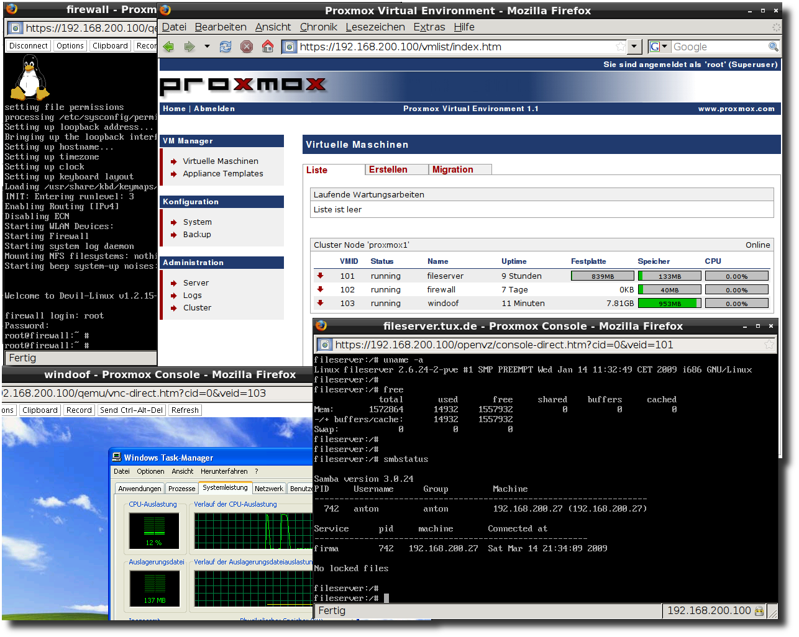Die Virtuellen Maschinen mit dem Zugriff auf die Konsolen.
Proxmox VE - KVM und OpenVZ mit grafischer Administrationsoberfläche
Ein weiteres Produkt, auf das hier näher eingegangen werden soll, ist die Open-Source-Entwicklung Proxmox VE (für Virtual Enviroment) (Link). Im Gegensatz zu den Red-Hat-Entwicklungen setzt es nicht auf libvirt auf, bietet aber trotzdem zwei Virtualisierungslösungen: entweder OpenVZ (bedingt, dass das Gastsystem den gleichen Kernel wie das Hostsystem nutzt) oder KVM für die volle Virtualisierung. OpenVZ ist übrigens die Grundlage für das kostenpflichtige Virtuozzo. Proxmox VE ist sicherlich nicht für den Heimbereich gedacht, denn der installierte Server hat keine grafische Oberfläche und bei der Installation wird die gesamte Festplatte überschrieben! Also Vorsicht beim Ausprobieren: unbedingt eine komplett freie Festplatte verwenden. Trotzdem kann Proxmox VE auch schon für kleine Firmen interessant sein - etwa, wenn mehrere Dienste erforderlich sind, aber aus Kostengründen nur ein Server betrieben werden soll. Als Beispiel wird hier von folgender Konstellation ausgegangen: Ein Samba-Fileserver, ein Windows-Rechner für die Programmaltlasten und die Firewall, die die Internetanbindung absichert. Weitere Servermöglichkeiten, je nach Größe und Anforderung der Firma, sind schnell gefunden: Mail-, Fax-, Web- oder Proxyserver zum Beispiel. Das ist auch der große Vorteil der Virtualisierung: Man kann schnell mal einen weiteren Server aufsetzen. Nach dem Download des rund 300-MB-großen ISO-Images (Link), ist die Installation schnell erledigt. Selbst auf einer älteren Hardware dauert die Grundkonfiguration mit einer Netzwerkkarte nur knapp über acht Minuten. Das zugrundeliegende Debian kann ganz gewohnt konfiguriert und erweitert werden. Es ist dadurch kein Problem, Backup-Clients nachzuinstallieren oder eine erweiterte Netzwerkkonfiguration einzurichten, als Beispiel seien virtuelle Netzwerkkarten mit Vlan-tagging genannt - Bonding kann übrigens mit Proxmox VE-Bordmitteln konfiguriert werden. Wegen der Ausfallsicherheit wird für den Server dringend ein Hardware-Raid empfohlen. Die Verwaltung der virtuellen Maschinen findet über einen zweiten Rechner per Web-Oberfläche statt. Diese ist funktional gehalten und erschließt sich dem Anwender schnell. 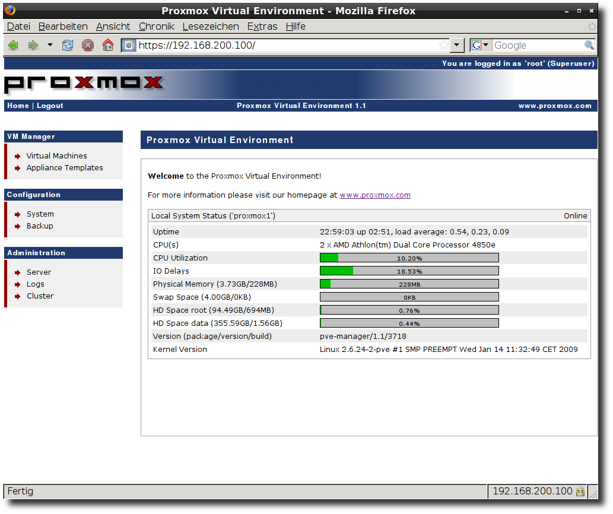Die Web-Oberfläche von Proxmox VE.
Verfügt man über mehrere Netzwerke oder Subnetze, so sollten diese zuerst konfiguriert werden, denn nach dem Anlegen einer weiteren virtuellen Bridge steht diese erst nach Neustart des Systems zur Verfügung. Beim Anlegen einer Virtuellen Maschine kann der Typ der Virtualisierung gewählt werden (KVM oder OpenVZ). Werkelt im Server eine CPU ohne Virtualisierungsoption, steht nur OpenVZ zur Verfügung. In der Maske wird auch die Anzahl der CPUs für die VM, RAM, Größe und Art der ersten Festplatte, Installationsmedium sowie die Netzwerkkarte festgelegt (diese Aufzählung bezieht sich auf eine KVM-VM). Weitere Festplatten und Netzwerkkarten können hinzugefügt werden, wenn die VM erstellt wurde. Bei der Zuweisung des Netzwerks ist es etwas schade, dass nur der Netzwerkadapter zu sehen ist. Für die meisten Anwendungen ist es sicherlich kein Problem, weil nur ein bis zwei Adapter vorhanden sind. Bei einem größeren Netzwerk muss man sich aber zum Beispiel merken, dass vmbr0 Produktionsnetz, vmbr1 DMZ, vmbr2 Internet usw. ist. Hier wäre eine Verwendung vom Netzwerknamen hilfreich. Als Installationsmedium kann das CD-ROM-Laufwerk des Servers herhalten oder ein ISO-Image einer CD/DVD, die man vorher komfortabel mit dem Webfrontend übertragen kann. Als Standard startet die virtuelle Maschine beim ersten Mal vom (virtuellen) CD-ROM, danach von der Festplatte. Das heißt, wenn ein Linuxsystem immer von CD booten soll, muss nach dem ersten Bootvorgang einmal die Bios-Einstellung korrigiert werden. 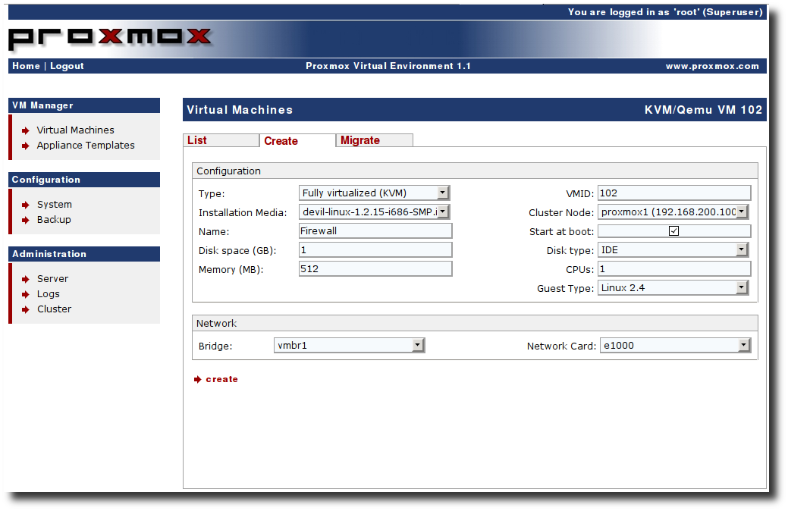
Anlegen einer KVM-Maschine.
Über das Webfrontend kann auch auf die Konsolen der jeweiligen VMs zugegriffen werden. Hierfür öffnet sich im neuen Browserfenster ein Java-Applet eines VNC-Players; übrigens funktioniert dies seit Suns JRE 1.6 Update 12 auch unter 64-Bit-Linux. Weiterhin lassen sich einige vordefinierte virtuelle Maschinen als Templates (OpenVZ) von der Herstellerhomepage über das Webfrontend nachladen. Wenn das Template erstmal heruntergeladen wurde, ist eine VM damit in Sekunden lauffähig. Es gibt einige Vorlagen: Von Centos bis Ubuntu, über Drupal bis MediaWiki. Es lassen sich auf der Seite noch mehr finden (Link). Dort kann des gepackte Archiv heruntergeladen und per scp auf den Server kopiert werden. Beispiel:
$ scp debian-4.0-standard_4.0-4_i386.tar.gz root@IP-vom-Proxmox-Server:/var/lib/vz/template/cacheSchon steht eine weitere Vorlage zur Verfügung. Proxmox VE bietet auch die Möglichkeit, zeitgesteuerte Backups durchzuführen. Hierbei wird bei KVM-Maschinen das Festplattenimage sowie die Konfigurationsdatei in einem Tar-Archiv an einem wählbaren Platz im Dateisystem gesichert. Damit das Festplattenimage auch konsistent ist, wird die Snapshot-Funktionalität des Proxmox VE zugrundeliegenden Dateisystems (Logical Volume Manager) genutzt. Bei der Installation wird die Festplattenaufteilung automatisch vorgenommen und einfach 4 GB in der Volumegroup pve freigehalten, um die Shapshots beim Backup zu ermöglichen. Das ist bewährte Technik und der Nutzer braucht sich darum nicht zu kümmern.
Der Proxmox VE-Cluster
Richtig nett wird es, wenn man mit Proxmox VE einen Cluster aufbaut. Hierbei ist allerdings kein Cluster im Sinne von Ausfallsicherheit gemeint, sondern eine gemeinsame Verwaltung der Clusterknoten bzw. hauptsächlich der virtuellen Maschinen auf den jeweiligen Knoten. Ein Cluster ist schell eingerichtet. Bei der Installation des zweiten Servers ist darauf zu achten, dass sich die Rechnernamen unterscheiden. Auf dem Master wird im Terminal ein# pveca -cund beim zweiten Server ein
# pveca -a -h IP-ADRESS-MASTERausgeführt. (Das IP-ADRESS-MASTER ersetzt man z. B. mit 192.168.200.100.) Schon steht der Cluster und wird synchronisiert. Wichtig ist hierbei noch, dass die virtuellen Netzwerkbridges (vmbr0-9) auf allen Clusterrechnern gleich definiert sind. Sonst führt ein Verschieben einer VM nicht zu dem erwünschten Ergebnis. 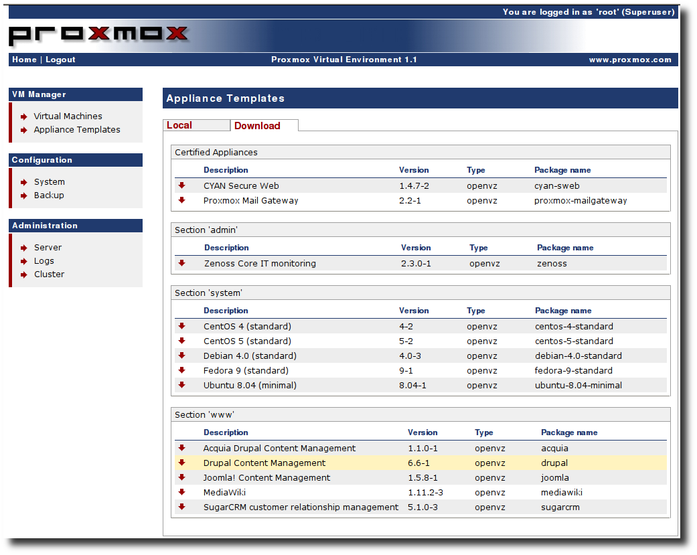
Zur Auswahl stehende Templates.
Nun können die Gastsysteme von einem Rechner zum anderen transferiert werden - auch im laufenden Betrieb. Dies dauert zwar seine Zeit, weil sämtliche Dateien der VM, also auch Disk-ima-ges, per rsync transferiert werden. Erst ganz zum Schluss wird das Gastsystem kurz eingefroren und dann auf dem neuen Host fortgesetzt. Dies dauert je nach System und Last zwischen wenigen Sekunden bis in den Minutenbereich. Im Testfall wurde ein Windows-Rechner, der per Netzwerkstream ein PDF aus einer Postscriptdatei generiert, unter Vollast umgezogen. Dies dauerte zwar recht lange, aber trotz eines Stillstandes von knapp über zwei Minuten kam es zu keinerlei Timeout und das PDF wurde ordnungsgemäß erstellt. Im echten Leben würde man sicherlich einen Zeitpunkt wählen, an dem der Umzugskandidat nicht besonders stark gefordert ist. Es ist aber ein beruhigendes Gefühl, wenn man weiß, dass es auch sonst funktioniert. Eine Online-Migration funktioniert nur, wenn auf beiden Knoten der gleiche CPU-Typ werkelt. Proxmox VE warnt leider nicht, wenn von AMD zu Intel oder andersherum migriert wird, was der virtuelle Gast mit einem Crash und anschließendem Neustart dankt! Installierte Templates (ISO-Files der CDs) werden automatisch auf alle Clusterknoten repliziert. Dadurch ist es z. B. auch problemlos möglich, die im Beispiel beschriebene Firewall, die von CD-Isoimage bootet, im Betrieb umzuziehen. Dies ist noch nicht einmal mit VMware Infrastructure möglich - hier ist es kein Problem, Festplatten im Betrieb zu migrieren, aber Maschinen mit BootCDs lassen sich nur abgeschaltet umziehen.
Proxmox VE im Vergleich zu VMware Infrastructure
Warum also noch Geld für proprietäre Produkte wie VMware Infrastructure (Link) ausgeben, wenn es Proxmox VE gibt? Dafür gibt es natürlich nach wie vor viele Gründe - auch wenn es inzwischen ein paar weniger sind. Die Lösungen haben einen unterschiedlichen Ansatz und entsprechend auch unterschiedliche Einsatzgebiete. So setzt VMware beim Festplattenspeicher auf ein Speichernetzwerk (SAN) während bei Proxmox VE jede Clusternode ihren eigenen Festplattenspeicher benötigt, der natürlich auch im SAN liegen kann. Ebenso wird die Konfiguration der einzelnen VMs an übergeordneter Stelle zwischengespeichert. Wenn bei Proxmox VE eine Clusternode ausfällt, sind - wie bei VMware - alle darauf installieren Maschinen ebenfalls nicht erreichbar. Sie können bei Proxmox VE aber nicht auf einem noch laufenden Server wieder neu gestartet werden, weil die Konfigurationsdateien und die Festplattenimages dort nicht verfügbar sind. Bei VMware kann man die betroffenen Systeme einfach auf einen anderen Server neu starten und man ist wieder im Geschäft. Damit die Downtime unter Proxmox VE kurz gehalten werden kann, lässt sich über die Wiederherstellung vom Backup natürlich eine Möglichkeit finden. Das dauert allerdings immer eine recht lange Zeit und man startet mit dem Stand des letzten Backup. Dies ist bei Rechenknechten sicherlich verschmerzbar, aber für einen Datenbankserver natürlich nicht. Eine weitere Möglichkeit, die VMware bietet, ist, dass ein Client unterschiedliche Speicherarten nutzen kann. So könnte das Betriebssytem auf einem SATA-Raid6 liegen, die Datenbank jedoch auf einem FibreChannel-Raid10. So etwas ist bei Proxmox (noch?) nicht möglich. Alle Disk-Dateien aller VMs liegen auf einem Dateisystem. Ist Proxmox VE also nichts für geschäftskritische Anwendungen? Das lässt sich so pauschal nicht sagen. So kann man etwa einen Linux-Cluster mit zwei Nodes erstellen, die als virtuelle Maschinen auf zwei Proxmox VE-Servern laufen. Schon hat man Hochverfügbarkeit mit Open-Source-Mitteln erreicht und kann die Rechenleistung der Hardware noch für weitere virtuelle Server nutzen. Gerade für Firmen lohnt es sich auf jeden Fall, mal ein Blick darauf zu werfen. Zumal es auch möglich ist, professionellen Support zu erhalten.KVM zum schnellen Ausprobieren auf dem Heimrechner
Hinweis: Die Installation wurde unter Debian durchgeführt. Zuerst sollte man kontrollieren, ob KVM überhaupt lauffähig ist:$ grep -E 'svm|vmx' /proc/cpuinfoWenn hier nicht die Flags angegeben werden, bietet der Prozessor keine Virtualisierungsunterstützung. Wenn doch, kann man fortfahren und zuerst das Paket kvm installieren. Danach muss man den eigenen Benutzer in die Gruppe hinzufügen:
# adduser BENUTZERNAME kvmGegebenenfalls muss man noch einen VNC-Viewer wie Vinagre (Link) (über das Paket vinagre) installieren, um auf die Konsole der virtuellen Maschine zugreifen zu können. Zur Übersichtlichkeit erzeugt man ein eigenes Verzeichnis für die Daten:
$ mkdir vm $ cd vmDanach kann man die Platte erzeugen (dabei wird eine 6-GB-große Datei mit lauter Nullen erzeugt):
$ dd if=/dev/zero of=testdisk.img bs=1G count=6Jetzt kann der virtuelle Rechner gestartet werden (allerdings ohne Netzwerk):
$ kvm -hda testdisk.img -cdrom ../install-dvd.iso -boot d -k de -m 512 -net none -vnc 127.0.0.1:1}Erklärung der Parameter:
- -hda testdisk.img - Als erste Festplatte wird die Datei testdisk.img im aktuellen Verzeichnis gewählt.
- -cdrom ../install-dvd.iso - Als CD-ROM wird das ISO-Image install-dvd.iso im übergeordneten Verzeichnis verwendet.
- -boot d - Es wird von CD gebootet; seltsamerweise wird hier die Windowsnomenklatur verwendet, -boot c startet von der Festplatte.
- -m 512 - Dem Gastsystem stehen 512 MB RAM zur Verfügung.
- -net none - Das Netzwerk wird deaktiviert.
- -vnc 127.0.0.1:1 - Startet ein VNC-Server als Konsole für das Gastsystem auf dem Loopbackdevice.
- -k de - Damit lässt sich noch das deutsche Tastaturlayout einschalten. Zum Teil ist es aber geschickter, es nicht zu verwenden und dafür das richtige Layout im Gastsystem zu wählen, da z. B. auf einer Tastatur das, für einige Live-CDs wichtige, Bootflag lang=de nicht angegeben werden kann, weil das Gleichheitszeichen nicht vorhanden ist.
Das Ganze nun mit Netzwerk
Ohne Netzwerk ist es natürlich nur eine halbe Sache. Deshalb soll in den nächsten Beispielen auch eine Netzwerkverbindung eingerichtet werden. Erstmal die einfache Variante - hierbei verwaltet KVM ein eigenständiges Netz und setzt Anfragen vom Wirtssystem auf die originale Netzwerkadresse des Rechners um. Als Beispiel das Starten einer Live-CD aus dem CD-ROM-Laufwerk mit einfachem Netzwerk:$ kvm -cdrom /dev/cdrom -boot d -m 512 -net nic -net user -vnc 127.0.0.1:1-net nic -net user ist der Standardwert, wenn nichts anderes für das Netzwerk angegeben wird. Es kann also auch weggelassen werden. Die virtuelle Maschine hat z. B. die Adresse 10.0.2.15. Allerdings zeigt schon ein traceroute auf dem Gastsystem im Vergleich zu dem Wirt, dass die Netzwerkanbindung gewisse Schwächen hat: Gastsystem:
$ traceroute www.prolinux.de traceroute to www.prolinux.de (213.239.211.178), 30 hops max, 40 byte packets 1 10.0.2.2 (10.0.2.2) 0.585 ms 0.476 ms 0.394 ms 2 * * * 3 * * * 4 * * * ...Wirtsystem:
$ traceroute www.prolinux.de traceroute to www.prolinux.de (213.239.211.178), 30 hops max, 40 byte packets 1 fritz.fon.box (192.168.200.1) 0.640 ms 1.094 ms 7.952 ms 2 * * * 3 * ge-1-6-175.hhb002isp006. versatel.de (213.30.195.149) 62.935 ms * ...Andere Rechner in dem Netzwerk können das Gastsystem auch nicht anpingen. Für eine vollwertige Netzanbindung bedarf es einer kurzen Vorarbeit. Man benötigt eine Netzwerkbridge statt der normalen eth0-Schnittstelle und tap-Devices. Hierbei ist zu beachten, dass es sich um ein kabelgebundenes Netzwerk handeln sollte (die meisten Wireless-Schnittstellen funktionieren anscheinend nicht im Bridge-Modus). Dazu installiert man zuerst die Pakete bridge-utils und uml-utilities und erstellt dann eine Sicherung der Netzwerkeinstellungen:
$ cd /etc/network # cp interfaces interfaces.savAchtung: Hier im Beipiel wird das Netzwerk automatisch per dhcp konfiguriert. Wenn die Adressen statisch vergeben wurden, ist die Datei entsprechend umzuändern. Danach öffnet man die Datei interfaces in einem Editor mit Root-Rechten und fügt beim zugehörigen Gerät (meist „primary network interface“) die Zeile bridge_ports eth0 hinzu, sodass die Datei danach in etwa wie folgt aussieht:
# The loopback network interface auto lo iface lo inet loopback # bridge0 # The primary network interface auto br0 iface br0 inet dhcp bridge_ports eth0Danach starte man das Netzwerk neu und testet kurz, ob noch eine Verbindung zum Internet möglich ist:
# /etc/init.d/networking restart $ ping www.prolinux.deWenn es geklappt hat, kann man nun die Live-CD von vorhin bemühen und mit einem eigenständigem Netzwerk starten. Dazu erzeugt man ein tap0-Device und aktiviert dieses:
# /usr/sbin/tunctl -u `whoami` -t tap0 # /sbin/ip link set tap0 upDas Verbinden des tap0-Devices mit der Bridge br0 braucht man nicht machen, weil es automatisch von KVM ausgeführt wird:
# kvm -cdrom /dev/cdrom -boot d -m 512 -net nic -net tap,ifname=tap0 -vnc 127.0.0.1:1Wegen des Netzwerkzugriffes muss diesmal KVM mit Root-Rechten gestartet werden. Wenn man noch das Paket qemu installiert, können die Festplattenimages auch im qcow2-Format erstellt werden. Der Vorteil ist, dass das Image nur so viel Speicher belegt, wie es Daten enthält:
$ qemu-img create -f qcow2 testdisk.img 6GWeiterhin ist dieses Paket nötig, um Festplattenimages, die für den VMware Player gedacht sind, zu konvertieren. Dazu hier ein Beispiel:
$ qemu-img convert -f vmdk opsiserver.vmdk -O qcow2 opsiserver.qcow2 $ ls -l opsiserver.* -rw-r--r-- 1 ulembke ulembke 1185882112 2009-03-23 22:52 opsiserver.qcow2 -rw------- 1 ulembke ulembke 1207500800 2008-07-07 15:08 opsiserver.vmdk $ qemu-img info opsiserver.qcow2 image: opsiserver.qcow2 file format: qcow2 virtual size: 30G (32212254720 bytes) disk size: 1.1G cluster\_size: 4096Wie man an der Ausgabe sieht, kann die Image-Datei bis zu 30 GB groß werden. Für weitergehende Information über Virtualisierung bietet sich der sehr interessante Audio-Podcast Folge 92 vom Chaosradio-Express (Link) und die KVM-Seite (Link) an. Links
- http://www.linux-kvm.org/page/Main_Page
- http://www.vmware.com/de/products/player/
- http://www.virtualbox.org
- http://virt-manager.org
- http://www.ovirt.org
- http://libvirt.org/
- http://pve.proxmox.com/wiki/Main_Page
- http://pve.proxmox.com/wiki/Downloads
- http://download.proxmox.com/appliances
- http://www.vmware.com/de/products/vi/
- http://projects.gnome.org/vinagre/
- http://chaosradio.ccc.de/cre092.html
- http://www.linux-kvm.org/page/HOWTO
| Autoreninformation |
| Udo Lembke kam 1997 durch ein mklinux auf dem Mac mit Linux in Kontakt. Die Arbeit als Systemadministrator sorgte ebenso dafür, dass das freie Betriebssystem einen größeren Stellenwert einnahm. Seit vielen Jahren werden privat nur noch Open-Source-Betriebssysteme und -Programme eingesetzt. |
Geh spielen! - GoPlay zur Suche nach Software einsetzen
von Hans-Joachim Baader Das Programm GoPlay, in Debian 5.0 erstmals vorgestellt, macht es leichter, Programme zu finden, die einem zusagen, und ermöglicht sogar aufregende neue Entdeckungen, denn durch Tags kann man sich alle Programme zu einem bestimmten Thema oder einer bestimmten Art anzeigen. Redaktioneller Hinweis: Der Artikel „GoPlay zur Suche nach Software einsetzen“ erschien erstmals bei Pro-Linux (Link). In Debian 5.0 (siehe “Debian GNU/Linux 5.0 Lenny - Der Zustand der Distribution“) hatte das Programm GoPlay seinen ersten Auftritt. Es wurde sogar eigens in den Release Notes erwähnt. Eine Übersetzung der Debian-eigenen Beschreibung des Programmes lautet etwa: „GoPlay! ist eine grafische Oberfläche (GUI), die Debtags benutzt, um auf einfache Weise Spiele in Debian zu finden. Das Programm benutzt FLTK zur grafischen Darstellung und libept als Backend zum Lesen der Daten.“ Die technischen Einzelheiten sind hier sicher wenig von Bedeutung. Die Tatsache, dass hier FLTK statt KDE- oder GNOME-Bibliotheken verwendet wird, macht keinen großen Unterschied. Interessanter ist die Information, dass das Programm auf Debtags (Link) beruht. Mit diesen Tags werden mittlerweile alle Pakete in Debian in verschiedene Kategorien eingeteilt. Ihre Einführung war also die zwingende Voraussetzung, um ein Programm wie GoPlay schaffen zu können. Es geht noch weiter mit der Beschreibung, die noch weitere interessante Informationen enthüllt: „GoPlay! ist auch ein generischer, aber einfach zu benutzender Paket-Browser, der auf Debtags beruht. Vorkonfigurierte Browser sind GoLearn!, GoAdmin!, GoNet!, GoOffice!, GoSafe! und GoWeb!, die Programmpakete (und für einige davon auch Dokumentationspakete) anzeigen, die mit Bildung, Administration, Netz, Bürosoftware, Sicherheit und Web zu tun haben. Man kann auch seinen eigenen angepassten Browser mit Kommandozeilen-Optionen erzeugen.“ Es gibt also neben GoPlay, welches mit dem Kommando goplay aufgerufen wird, also noch weitere, nämlich golearn, gonet, gooffice, gosafe und goweb.Installation
Als Bestandteil von Debian wird GoPlay über das Paket goplay über das Paketverwaltungsprogramm installiert.Benutzung
Nach dem Start von GoPlay erscheint ein Fenster, das in verschiedene Felder aufgeteilt ist. Links oben befinden sich zwei Listboxen zur Auswahl aus verschiedenen Kategorien sowie ein Eingabefeld für eine Suche. Darunter wird eine Liste der passenden Programme präsentiert. Rechts werden Informationen zu einem ausgewählten Programm angezeigt. Hier gibt es eine Dreiteilung. Oben ist Platz für einen Screenshot vorgesehen, in der Mitte wird die Beschreibung eingetragen und unten sieht man die Tags zu dem Programm. 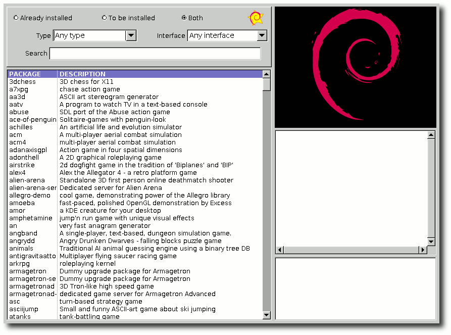GoPlay direkt nach dem Start.
Die Bedienung lässt in vieler Hinsicht zu wünschen übrig. So ist die Auswahl von Programmen und das Ansehen der darüber vorliegenden Informationen das einzige, was man mit dem Programm machen kann. Eine Option, ein ausgesuchtes Programm gleich vom Paketmanager installieren zu lassen, fehlt. Ebenso wäre es denkbar, dass gleich ein paar Links zu weiterführenden Informationen zu dem Programm angezeigt werden. Beim Klick auf diese könnte sich ein Browserfenster öffnen. Zu jedem Programm kann nur ein Screenshot dargestellt werden. Voraussetzung ist natürlich, dass überhaupt Screenshots vorhanden sind, was offenbar zur Zeit nur bei einem kleinen Teil der Programme der Fall ist. Andererseits würde, wenn zu jedem Programm ein Screenshot von 20 KB Größe vorhanden wäre, der Umfang des GoPlay-Pakets auf hunderte von MB anschwellen. Mehr als ein Screenshot pro Programm scheint daher momentan utopisch. GoPlay scheint über keine Internationalisierung zu verfügen. Die ganze Oberfläche ist in Englisch gehalten, eine Möglichkeit zur Änderung fehlt. Auch bei den Programmbeschreibungen wird die eingestellte Sprache des Anwenders nicht berücksichtigt. Die Beschreibung erscheint immer in Englisch, selbst bei Programmen wie „kmines“, deren Beschreibung in der APT-Datenbank bereits in deutscher Übersetzung vorliegt. Die Wahl des Toolkits FLTK wird früher oder später dazu führen, dass sich Entwickler daran machen werden, das Programm an GNOME oder KDE anzupassen. Eine solche Portierung könnte leicht viele Verbesserungen bringen, denn in der momentanen Form hat GoPlay ja nicht viel zu bieten. Trotz dieser Schwächen ist GoPlay eine tolle Sache, um schnell neue Programme zu finden. Fehlende Screenshots sollten dabei kein Hindernis darstellen, schließlich enthält die Beschreibung ja die wichtigeren Informationen. 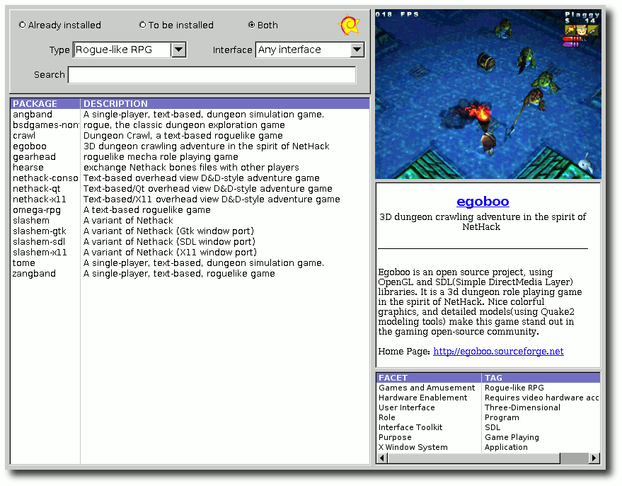
Auswahl von Spielen nach Typ.
Anpassungen
GoPlay arbeitet mit „Facetten“ und Tags. Es lassen sich mit den Kommandozeilen-Argumenten -primary und -secondary primäre und sekundäre Facetten angeben, die dann in der Oberfläche als Auswahlboxen dargestellt werden. Man muss beachten, dass nicht jede mögliche Kombination sinnvoll ist. Die Oberfläche passt sich auch nicht an die Änderungen an, d. h. vor der ersten Listbox steht immer „Type“ und vor der zweiten immer „Interface“. Tags bestehen immer aus der Kombination einer Facette mit einem weiteren Begriff. Es gibt beispielsweise die Facette „admin“, dieser untergeordnet findet man die Tags „admin::accounting“, „admin::backup“ und viele mehr. Es gibt eine verbindliche Liste der erlaubten Facetten und Tags, die aber sicher noch erweitert wird. Details hierzu lassen sich in der Manpage von Debtags nachlesen, da Debtags wie nahezu alles in Debian sehr gut dokumentiert ist. Weil dieser Artikel keine erschöpfende Behandlung von debtags darstellen soll, soll der Hinweis genügen, dass man sich mit$ debtags tagcat | grep Faceteine Liste der definierten Facetten ausgeben lassen kann - eine bessere Methode wurde noch nicht gefunden. Nur zur Information noch die Ausgabe von
$ debtags stats Total count of packages: 33704 Total count of packages (according to APT): 33704 Total count of packages (according to Debtags): 21336 Number of facets: 31 Number of tags: 591 Number of packages with tags, but no special::not-yet-tagged tags: 21336 (100.0%) Number of packages with special::not-yet-tagged tags: 0 (0.0%) Number of packages with only special::not-yet-tagged tags: 0 (0.0%) Number of packages with no tags: 0 (0.0%)Gewappnet mit diesen Informationen und der Manpage von GoPlay kann man nun leicht nachprüfen, dass der Aufruf von goplay ohne Argumente äquivalent ist zu:
$ goplay --primary=game --secondary=interface --ftags=role::programDas Argument --ftags schränkt die Auswahl der dargestellten Programme von Anfang an auf diejenigen ein, die dieses Tag aufweisen. Gibt man hier das Argument --ftags=role::data an, so beschränkt sich die Auswahl auf Daten, und das sind, wenn man zusätzlich die Facette „Spiele“ ewählt hat, fast ausschließlich Fortune-Eingabedateien. 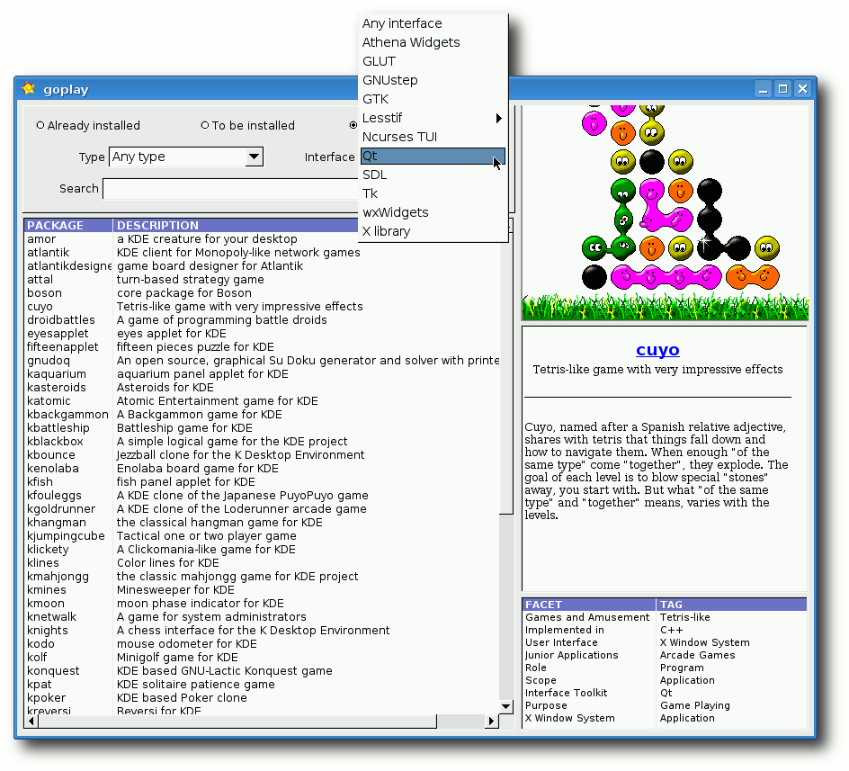
Spiele sortiert nach Toolkit.
Interessanter wird es mit den anderen beiden Optionen. Mit --primary=field erhält man eine Übersicht über alle Applikationen, die in irgendeiner Weise mit Wissenschaft und Forschung zu tun haben, sortiert nach Fachgebiet. Mit --secondary=implemented-in erreicht man eine Sortierung nach den Programmiersprachen, in denen die Programme geschrieben wurden, und mit --secondary=uitoolkit eine Sortierung nach dem GUI-Toolkit. Diese Informationen sind für Programmierer allerdings interessanter als für die Anwender. Aber auch Facetten wie „works-with“ oder „works-with-format“ stehen zur Verfügung, die wiederum auch Anwender interessieren könnten. Welche Kombinationen von Facetten sinnvoll sind, kann man durch Experimentieren erkunden.
Fazit
GoPlay ist eine simple Idee, deren Zeit eigentlich längst gekommen war. Allerdings musste man offenbar erst abwarten, bis das Debtags-System eingeführt war. Dies begann schon vor mehreren Jahren und mittlerweile dürften fast alle Debian-Pakete mit Tags gekennzeichnet sein. Wo man sich bisher auf diversen Webseiten informieren musste, die langsam oder chaotisch waren, kann man sich jetzt schnell das passende Programm heraussuchen, auch wenn man nicht im Internet ist, vorausgesetzt natürlich, es ist in Debian vorhanden. Falls es noch Pakete gibt, die keine Tags aufweisen, werden diese der Suche entgehen. Aufgrund des geringen Funktionsumfangs scheint GoPlay eher eine Machbarkeitsstudie als eine fertige Anwendung zu sein. Vielerlei Verbesserungen sind denkbar und werden hoffentlich noch kommen. Dennoch lassen sich mit GoPlay schon jetzt einige Perlen entdecken, die man andernfalls vielleicht nicht gefunden hätte. Links| Autoreninformation |
| Hans-Joachim Baader befasst sich seit 1993 mit Linux. 1994 schloss er sein Informatikstudium erfolgreich ab und machte die Softwareentwicklung zum Beruf. Seit 1995 arbeitet er freiberuflich. Daneben ist er einer der Betreiber von Pro-Linux.de. |
Kennwortgedächtnis auslagern mit KeePassX
von Mathias Menzer Der eigene Rechner, das Lieblingsforum, das E-Mail-Konto, Jabber, ICQ, das Blog, Twitter, Amazon, eBay, der PC in der Firma, SAP - alle haben eines gemeinsam: Sie wollen mit einem Kennwort vor unbefugtem Zugriff geschützt sein. Hat man dieses vergessen, ist es auch mit der legitimen Nutzung vorbei, bis man sich wieder erinnert oder, falls möglich, ein neues Kennwort gesetzt hat. Also lautet die Devise: Aufschreiben. Da aber der Admin auf das Post-It am Monitor des Firmen-Rechners ungehalten reagiert und die Kinderlein oder besonders lustige Freunde Ruckzuck das eigene Geburtsdatum, das den Zugang zum Blog beschützt, in ihrem eigenen, spaßigen Sinne zu nutzen wissen, muss eine andere Lösung her. Eine Möglichkeit bietet KeePassX (Link) für diesen Zweck.Installation
KeePassX wird unter der GNU GPL v2 für die gängigen Linux-Distributionen sowie Mac OS X und Windows bereitgestellt. Für die Installation unter Linux wird Qt in Version 4.3 oder höher benötigt (Module: QtCore, QtGui, QtXml), ebenso libXtst (Link). Bei einer Installation der bereitgestellten Binärpakete (Link) für die eigene Linux-Variante sollten diese Abhängigkeiten jedoch automatisch aufgelöst werden. KeePassX entstand aus dem KeePass Password Safe (Link), der ausschließlich für Windows zur Verfügung steht und auch weitere Abkömmlinge für die unterschiedlichsten Betriebssysteme und Geräte, darunter PocketPC, PalmOS oder das iPhone, hervorgebracht hat. Mittlerweile wurde KeePassX, ursprünglich als KeePass/L nur für Linux konzipiert, auch auf Windows und Mac OS X portiert, bietet dort jedoch nicht alle Funktionen, die unter Linux zur Verfügung stehen. Die Datenbank, in der die Kennwörter abgelegt werden, ist weiterhin kompatibel zu KeePass und seinen Derivaten, wodurch die Verwendung der eigenen Kennwort-Sammlung auf einer Vielzahl unterschiedlicher Geräte und Systeme möglich ist. Dieser Artikel bezieht sich auf die Version 0.3.4. Nach Installation und Start wird man von einer übersichtlichen Oberfläche empfangen, die jedoch in Englisch gehalten ist. Die deutsche Sprachdatei kann von Sourceforge (Link) heruntergeladen und mit Superuser-Rechten in /usr/share/keepassx/i18n/ abgelegt werden. Nach einem neuen Start der Anwendung sollte die Oberfläche auf Deutsch erscheinen, sofern dies als Standard-Systemsprache verwendet wird. Während links in einer Baumansicht frei definierbare Gruppen aufgeführt sind, präsentiert sich rechts eine Auflistung der Konten, die in der jeweils ausgewählten Gruppe liegen. Markiert man eines der Konten, werden darunter weitere Details angezeigt. Das Aussehen dieser Anzeige kann unter „Extras » Einstellungen » Appearance » Anpassung der Eintragsdetailansicht“ an die eigenen Wünsche angepasst werden. Welche Informationen in der Kontenliste dargestellt werden, lässt sich über das Menü unter „Ansicht » Spalten“ einstellen. Beruhigend: Kennwörter werden überall mit Sternchen „*****“ kaschiert, sofern man dies nicht ebenfalls über das „Ansicht“-Menü ändert. 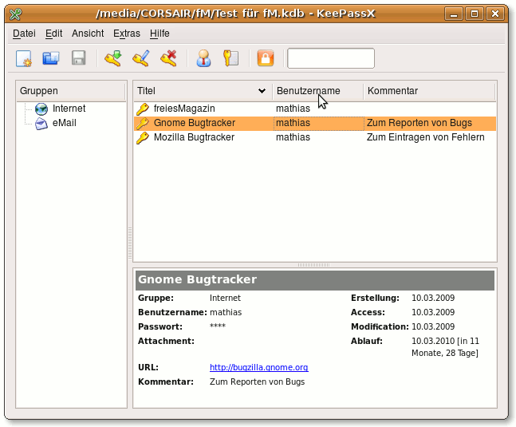Die Oberfläche mit Gruppen (links), Kontenliste (rechts oben) und Detailinformationen zum ausgewählten Konto (rechts unten).
Benutzung
Neue Datenbank anlegen
Bevor man mit der Eingabe von Benutzerkonten beginnen kann, muss zuerst über „Neue Datenbank“ (Tasten Strg + G) eine Datenbank angelegt werden. Zu deren Absicherung kann ein Kennwort und/oder eine Schlüsseldatei verwendet werden. Die Schlüsseldatei ist nur sinnvoll, wenn sie von der Datenbank getrennt aufbewahrt wird, beispielsweise auf einem USB-Speicher oder einem anderen Netzwerk-Speicher als die Datenbank. Die Datenbank wird standardmäßig mit einer 256-Bit-AES-Verschlüsselung abgesichert, alternativ kann nachträglich auch eine 256-Bit-Twofish-Verschlüsselung gewählt werden. Gespeichert wird die Datenbank über den „Datenbank speichern“-Knopf in der Werkzeugleiste oder die Tastenkombination Strg + S. Dies sollte man nach allen Änderungen auch tun, oder man stellt unter „Extras » Einstellungen » General » automatisches Speichern der Datenbank beim Beenden und beim Sperren des Arbeitsbereiches“ ein.Konten eintragen
KeePassX ermöglicht das Anlegen von Gruppen, in denen die Benutzerkonten und Kennwörter abgelegt werden können, z. B.: „Internet“ oder „E-Mail“. Die Bezeichnungen für diese Gruppen können frei gewählt werden, auch das Anlegen von Untergruppen ist möglich. Alle Gruppen werden in einer Baumstruktur im Bereich „Gruppen“ angezeigt, wodurch sich die Kennwort-Sammlung übersichtlich ordnen lässt. Ein Klick auf „Eintrag neu hinzufügen“ (Strg + Y) öffnet einen Dialog, in dem die Gruppe (z. B.: „Internet“), ein Icon (z. B.: Schlüssel), ein Titel (z. B.: „Mozilla Bugtracker“), ein Benutzername (z. B.: „mathias“), eine URL (z. B.: „https://bugzilla.mozilla.org“), das Kennwort, ein Kommentar, ein Ablaufdatum sowie ein Anhang hinterlegt werden können. Das Kennwort kann KeePassX mittels eines eingebauten Passwortgenerators nach den Vorgaben des Anwenders selbst erzeugen. Standardmäßig ist es nicht im Klartext dargestellt, um vor etwaigen Schulterguckern zu schützen, kann jedoch mit einem Klick auf den „Augen-Button“ rechts der Eingabefelder sichtbar gemacht werden. Dieses Verhalten kann auch in den Einstellungen („Extras » Einstellungen“) unter „Sicherheit“ geändert werden. Das Ablaufdatum dient zur Erinnerung für Kennwörter die systembedingt, weil z. B. die technische Umsetzung einer Sicherheitsrichtlinie es fordert, oder aus dem eigenen Sicherheitsbewusstsein heraus periodisch geändert werden müssen. Unter „Extras » Zeige abgelaufene Einträge“ (Strg + X) lassen sich Kennwörter auflisten, die dringend erneuert werden wollen. Im Dateianhang kann zum Beispiel ein Schlüssel für GnuPG oder SSH-RSA oder auch eine beliebige andere Datei angehängt werden. 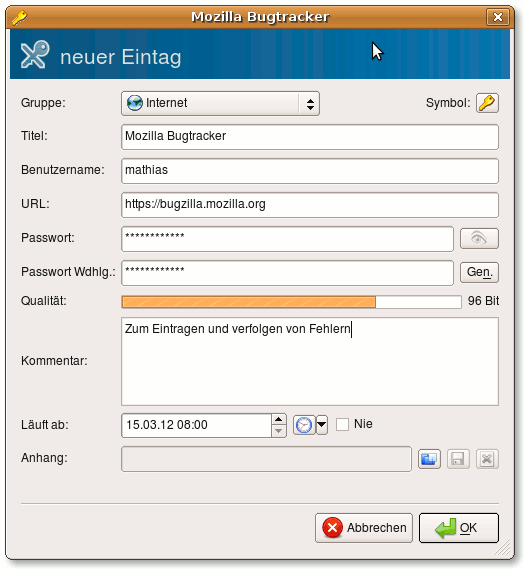Eintragen eines neuen Kontos.
Konten verwenden
Natürlich kann man einen angelegten Eintrag auch bearbeiten (Strg + E) und löschen (Strg + D). Die Möglichkeit, bestehende Einträge zu duplizieren (Strg + K) ist nützlich, wenn man für manche Dienste über mehrere Konten, zum Beispiel ein Benutzerkonto und eines zum Administrieren, verfügt. Man muss dann nur noch Daten ändern, die sich unterscheiden, aber nicht alles erneut einpflegen. Möchte man sich bei einem Dienst anmelden, so kann man KeePassX entweder Benutzername und Kennwort nacheinander in die Zwischenablage kopieren lassen (Strg + B bzw. Strg + C) und diese dann über „Einfügen“ (Strg + V) in die jeweiligen Eingabefelder eintragen. Für Eingabefelder, bei denen der Wechsel vom Benutzer- zum Kennwortfeld mittels Tabulatortaste möglich ist, gibt es jedoch eine komfortablere Möglichkeit: Die Autotype-Funktion (Strg + V im KeePassX-Fenster) trägt automatisch Benutzername und Kennwort des ausgewählten Kontos ein, wenn zuvor das Benutzereingabefeld des zugehörigen Dienstes ausgewählt wurde. Hat man eine URL zu einem Konto eingetragen, so kann diese auch bequem aus KeePassX heraus mit dem als Standard hinterlegten Browser geöffnet werden (Strg + U). Eine direkt daran anschließende automatische Anmeldung funktioniert jedoch leider nicht. Eine dem Konto beigefügte Datei lässt sich aus dem Kontextmenü heraus auf einem Datenträger speichern.Kennwörter austauschen
Dank der Datenbank-Kompatibilität mit KeePass lassen sich die kdb-Dateien meist problemlos mit anderen auf KeePass aufbauenden Werkzeugen austauschen. Darüber hinaus existiert die Möglichkeit, Kennwörter aus einer KeePassX-XML-Datei in eine bestehende Datenbank zu importieren. Das gleiche gilt für PwManager-Kennwortsammlungen (.pwm) oder die XML-Datenbanken von KWallet (siehe „Die digitale Brieftasche: KWallet“, freiesMagazin 02/2009 (Link)). Zum Export steht nur das KeePassX-XML-Format zur Verfügung sowie ein einfaches Text-Format, die beide selbstverständlich Kennwörter im Klartext präsentieren und daher unter strengem Verschluss gehalten werden sollten.Passwortgenerator
Der eingebaute Passwortgenerator (Strg + P) erstellt bei Bedarf Zufallskennwörter von definierter Länge. Dabei lässt sich auch einstellen, ob Groß-, Kleinbuchstaben, Zahlen, Sonder-, Leerzeichen, Binde- und/oder Unterstriche in dem benötigten Kennwort zum Einsatz kommen sollen. Ein Freitextfeld erlaubt auch die Eingabe eines eigenen Zeichensatzes, der für die Kennwortgenerierung verwendet werden soll. Die Entropie-Sammlung zu aktivieren erhöht die Sicherheit, da sich dadurch die Vorhersagbarkeit der Zufallszahlen und damit der Kennwörter verringert, nachdem eines generiert wurde. Die Sammlung nutzt Eingaben von Maus und Tastatur, um eine ausreichend große Menge an Zufallszahlen zu erzeugen. 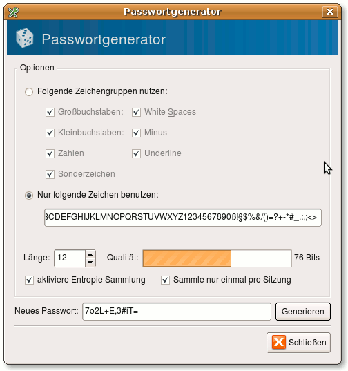Der Passwortgenerator nimmt einem das Grübeln über das perfekte Kennwort gerne ab.
Zur Sicherheit ...
Um unbefugten Zugriff auf die eigene Kennwortsammlung zu verhindern, sollte KeePassX gesperrt werden, wenn man es nicht benötigt. Dies kann über den Knopf „sperre Arbeitsbereich“ in der Werkzeugleiste, aus dem „Datei“-Menü heraus oder mittels Strg + L erfolgen. Auch hier kann ein Automatismus aktiviert werden, indem unter „Extras » Einstellungen » Sicherheit“ die Option „sperre Arbeitsbereich, wenn das Hauptfenster geschlossen wird“ oder „sperre Datenbank bei Inaktivität nach: XX Sekunden“ aktiviert wird. Wenn auch auf unterschiedliche Auslöser reagiert wird, das Ergebnis ist das Gleiche: Die Anwendung muss unter Eingabe des Kennworts und/oder mit dem Schlüssel wieder freigegeben werden.Exkurs: Sichere Passwörter
Natürlich schützt auch die beste Verwaltungssoftware nicht davor, dass schwache Kennwörter erraten oder abgeschrieben werden. Wirklichen Schutz der eigenen Accounts können nur sichere Kennwörter gewährleisten. KeePassX ist hier nur ein Hilfsmittel, um diese sicher verwahren und nutzen zu können. Wie sicher ein Kennwort ist, hängt mittlerweile nicht davon ab, ob es jemand herausfinden kann, sondern wann. Moderne Techniken zum Herausfinden von Kennwörtern umfassen Wörterbuch- und Brute-Force-Angriffe. Gegen erstere kann man sich schützen, indem man ein Kennwort wählt, das aus wild miteinander verwürfelten Buchstaben, Zahlen und/oder Sonderzeichen besteht - „Abc123“ und „123qwe“ sind im Übrigen in einschlägigen Wörterbüchern enthalten und daher nicht geeignet! Bei Brute-Force-Angriffen wird jede mögliche Kombination ausprobiert, diese führen daher zwangsläufig immer zum Erfolg, es ist nur die Frage, wie lange das dauert. Die Möglichkeiten, die derlei Programme bieten um solche Angriffe auf verteilten Systemen oder gar auf modernen Grafikkarten zu parallelisieren, erhöhen natürlich die Anzahl der Kennwörter, die pro Sekunde erzeugt und ausprobiert werden können (siehe hierzu auch „Bunte Rechenknechte“, c't 06/2009 (Link)). Gegen solche Methoden helfen nur lange, komplexe Kennwörter, die aus einem möglichst großen Spektrum an Zeichen bestehen sollten. Damit wird die Menge an möglichen Kombinationen in die Höhe getrieben und damit die Zeit, die zum Überprüfen notwendig ist. Natürlich könnte das gewählte Kennwort schon nach wenigen Versuchen, und damit nach kurzer Zeit, gefunden sein, das ist jedoch wenig wahrscheinlich. Für unterschiedliche Dienste sollten auch verschiedene Kennwörter genutzt werden. Damit wird vermieden, dass ein Dienstanbieter Benutzername und Kennwort aus seiner Datenbank ausliest und damit ein Login bei Diensten Dritter durchführt oder in sonstiger Weise ohne Zustimmung verwendet. Vergibt man auch einen anderen Benutzernamen für unterschiedliche Dienste, wird weiterhin die Zuordnung erschwert, womit man ein wenig für den Schutz seiner Privatsphäre im Internet tut. Tipps für starke Kennwörter:- unterschiedliche Benutzernamen und Kennwörter für unterschiedliche Dienste verwenden
- lange Kennwörter (mindestens 8, besser mehr als 12 Zeichen)
- Buchstaben, Groß- und Kleinschreibung, Zahlen und Sonderzeichen verwenden
- Kennwörter regelmäßig ändern (mindestens nach 3 Jahren, besser nach 1 Jahr)
- http://www.keepassx.org/
- http://www.keepassx.org/requirements
- http://www.keepassx.org/downloads
- http://keepass.info/
- http://keepassx.svn.sourceforge.net/viewvc/keepassx/trunk/share/keepassx/i18n/keepassx-de_DE.qm
- http://www.freiesmagazin.de/freiesMagazin-2009-02
- http://www.heise.de/kiosk/archiv/ct/2009/6
| Autoreninformation |
| Mathias Menzer legt Wert auf starke Kennwörter, kann sich aber nur die wenigsten davon merken. Die anderen liegen sicher in seinem digitalen Passwort-Gedächtnis, solange er dessen Kennwort nicht vergisst. ;) |
Kurztest: Bespin
von Moritz Lüdecke In der letzten Ausgabe von freiesMagazin berichteten wir im Artikel „Kurztest: Etherpad“ (Link) über den Texteditor Etherpad, mit dem man gemeinsam an einem Dokument über das Internet arbeiten kann. Heute soll das Mozilla-Projekt Bespin (Link) vorgestellt werden, welches das gleiche Ziel verfolgt.Ziel des Projektes
Das noch sehr junge Projekt mit der Versionsnummer 0.16 soll in Zukunft wie Etherpad in der Lage sein, mehrere Personen an einem Dokument arbeiten zu lassen. Zur Zeit ist das Projekt jedoch noch in der Entwicklungsphase (Link), somit muss man noch auf die Funktion warten, um mit anderen Benutzern gemeinsam an einem Dokument zu schreiben. Zudem ist die Oberfläche noch ausschließlich in Englisch gehalten. Die Entwickler legen jedoch sehr viel Wert auf die Geschwindigkeit der Texteingabe, damit der eingegebene Text schnell bei den mitarbeitenden Entwicklern auf dem Bildschirm erscheint.Anmeldung & Dashboard
Bevor man mit Bespin loslegen kann, muss man sich zuerst kostenlos auf der Webseite (Link) registrieren. Danach kann man sich anmelden und gelangt ins Dashboard, wo die verschiedenen Projekte mit den dazugehörigen Dateien aufzufinden sind. Im unterem Bereich werden die geöffneten Dateien angezeigt. Je größer man diesen Bereich skaliert, desto mehr Details erscheinen, so dass man sich zur jeder Zeit eine optimale Übersicht schaffen kann. 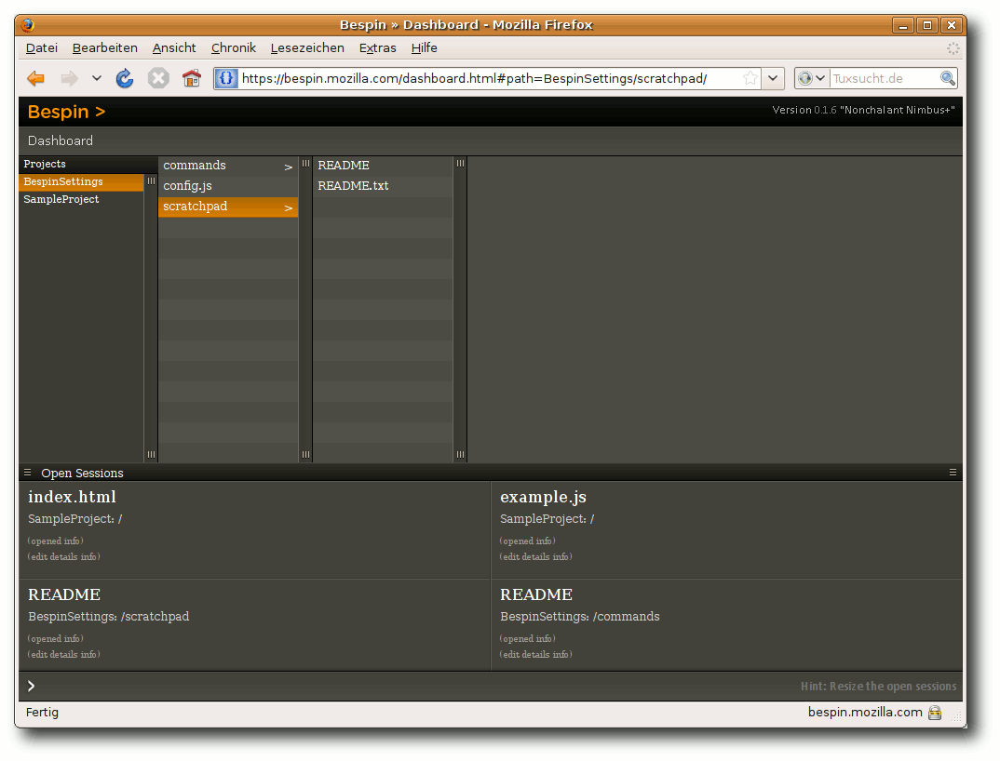Das Dashboard zur Verwaltung von den Projekten.
Der Texteditor
Öffnet man nun eine Datei, erscheint der Texteditor. Es sind bereits Grundfunktionen wie „Zeilennummerierung“, „Speichern“, „Rückgängig“ und „Wiederherstellen“ implementiert. Sehr praktisch ist eine Funktion, mit der man die Schriftgröße in drei verschiedenen Stufen einstellen kann. Eine weitere Funktion ermöglicht es, die Datei in einem Internet-Browser zu betrachten, um zum Beispiel sehen zu können, wie eine HTML-Datei im Browser dargestellt wird. 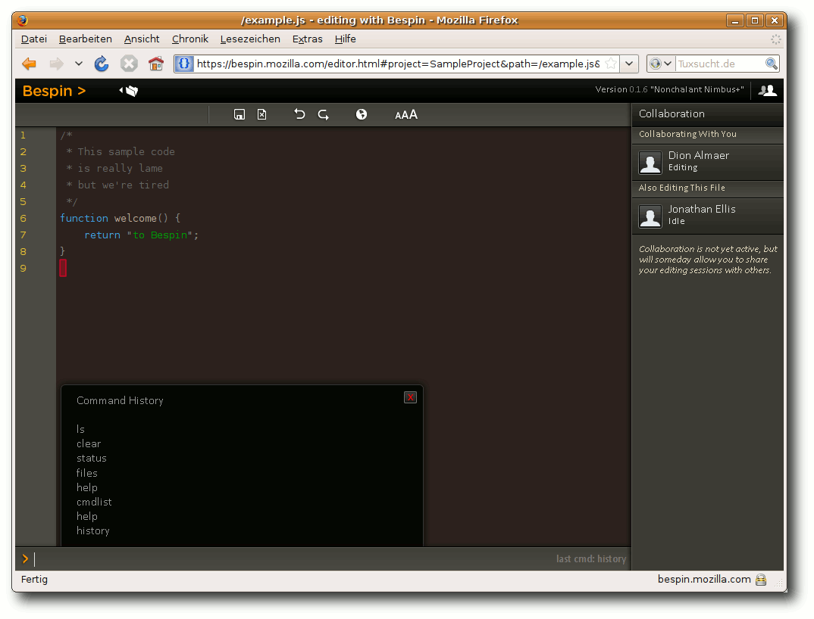Der Editor in Aktion.
Die Befehlszeile
Ähnlich wie der Texteditor Emacs besitzt der Editor von Bespin eine Befehlszeile, mit der man momentan rund 40 Befehle ausführen kann. Zum Beispiel gelangt man mit dem Befehl goto schnell zu einer vorgegebenen Zeile oder löscht den Inhalt mittels clear.Fazit
Bespin ist noch in einer sehr frühen Entwicklungsphase, weist dafür aber bereits alle nötigen Grundfunktionen auf. Die Befehlszeile erleichtert dabei das Arbeiten erheblich. Zudem benötigt man im Gegensatz zu Texteditoren wie Gobby (siehe „Textlich kooperieren mit Gobby - eine kurze Vorstellung“, freiesMagazin 07/2006 (Link)) nur einen Browser und ist somit nicht abhängig vom Betriebssystem. Links- http://www.freiesmagazin.de/freiesMagazin-2009-04
- https://bespin.mozilla.com
- http://labs.mozilla.com/projects/bespin
- http://www.freiesmagazin.de/freiesMagazin-2006-07
| Autoreninformation |
| Moritz Lüdecke arbeitet oft mit anderen Leuten an einem Text. Dabei kommt das GNOME-Programm Gobby zum Einsatz. |
Kurztipp: Splitscreens mit Vim
von Marcel Jakobs Der Editor Vim unterstützt horizontale und vertikale Splitscreens. Diese Funktion ist sehr praktisch, um zwei Stellen einer Datei nebeneinander zu betrachten (z. B. Definition und Aufruf einer Funktion) oder um zwischendurch schnell etwas nachschlagen zu können, ohne den aktuellen Text aus den Augen zu verlieren. Für diesen Artikel empfiehlt es sich, die grundlegenden Kommandos von Vim zu kennen, wie sie der Artikel „Vim - Ein Schnelleinstieg“ aus freiesMagazin 08/2008 (Link) vermittelt. Eine weitere kurze aber sehr gute Einführung ist „Learning the vi editor“, welche als deutsches WikiBook verfügbar ist (Link).Die Modi von Vim
Vim besitzt sechs Grundmodi, wobei hier kurz auf die wichtigsten drei eingegangen wird. Nach dem Start von Vim befindet man sich im Kommandomodus, der auch manchmal Normalmodus genannt wird. In diesem Modus ist fast jeder Taste eine Funktion zugeordnet. Mit I (und einigen anderen Tasten) kommt man vom Kommandomodus in den Einfügemodus, in dem man den Text verändern kann wie in anderen Editoren. Den Einfügemodus kann man jederzeit durch Esc verlassen, wodurch man wieder in den Kommandomodus gelangt. Mittels Doppelpunkt :, also Shift + ., wird der Kommandozeilenmodus gestartet. Im Kommandozeilenmodus werden die einzelnen Tastendrücke nicht als Kommando gewertet, sondern erscheinen in der untersten Zeile hinter dem Doppelpunkt. Mit Enter wird das eingegebene Kommando ausgeführt und zurück in den Kommandomodus gewechselt (es sei denn, es ist ein Befehl, der Vim schließt). Um einen Befehl im Kommandozeilenmodus abzubrechen drückt man Esc. Im Folgenden wird der Kommandozeilenmodus nicht mehr explizit erwähnt, sondern solche Befehle mit vorangestelltem Doppelpunkt gekennzeichnet. Diese Befehle braucht man also nur im Kommandomodus abzutippen und mit Enter zu bestätigen. Ansonsten wird sich immer auf den Kommandomodus bezogen, wenn nichts anderes erwähnt wird.Splitscreen aktivieren
Der horizontale Splitscreen wird mittels :split [DATEINAME] aufgerufen und teilt das Fenster in eine obere und eine untere Hälfte. So sieht man die geöffnete Datei in zwei Ansichten und kann in beiden Teilen scrollen. Änderungen werden in beiden Fenstern gleichzeitig ausgeführt. Wird :split mit einem Dateinamen als Argument aufgerufen, so wird die Datei im oberen Fenster angezeigt, während im unteren Fenster die bereits geöffnete Datei verbleibt. Der vertikale Splitscreen wird mit :vsplit [DATEINAME] eingeleitet und teilt das Fenster in die linke und die rechte Hälfte. Ansonsten funktioniert er genauso wie der horizontale Splitscreen. Die Splitscreen-Funktionen können beliebig oft verwendet werden und so kann man z. B. das untere Fenster eines horizontalen Splitscreens noch einmal vertikal teilen. Um zwischen den einzelnen Fenstern zu wechseln kann man die Tastenkombination Strg + W, W verwenden (Strg + W drücken und danach einmal W drücken).Beispiel
Man öffnet mit Vim die Datei ~/.bashrc mit dem Befehl$ vim ~/.bashrcin der Konsole. Möchte man nun die Datei ~/.bash_profile in einem Splitscreen öffnen, gibt man folgendes ein:
:split .bash_profileNun teilt sich das Fenster und oben wird die Datei ~/.bash_profile angezeigt während unten die Datei ~/.bashrc bleibt. Der Cursor ist nun im oberen Fenster und man kann ihn durch den Text bewegen oder Änderungen am Text vornehmen. Nach dem Ändern von Textstellen sollte man immer mit Esc wieder in den Kommandomodus wechseln. Mit Strg + W, W wechselt der Cursor in das untere Fenster und man kann die Datei ~/.bashrc bearbeiten. Gibt man nun
:vsplitein, so teilt sich das untere Fenster vertikal und die /.bashrc wird ein zweites mal geöffnet. Mit Strg + W, W kann man nun zwischen allen drei Fenstern hin und her schalten. Ändert man nun die ~/.bashrc in einem der beiden unteren Fenster, kann man sehen wie sich die Datei auch im anderen Fenster ändert. Mit :q bzw. :q! kann man das Fenster, in dem sich der Cursor befindet, wieder schließen. Mit :qa bzw. :qa! werden alle Fenster geschlossen und Vim beendet. Möchte man ein neues Dokument in einem Splitscreen anlegen, so kann man mit :new bzw. :vnew ein leeres horizontales bzw. vertikales Fenster öffnen. Die Größe der einzelnen Fenster kann auch geändert werden. Bei horizontalen Splitscreens wird mit Strg + W, + das aktuelle Fenster vergrößert und mit Strg + W, - verkleinert. Bei vertikalen Splitscreens wird das Fenster, das den Cursor enthält, mit Strg + W, Shift + < vergrößert und mit Strg + W, < verkleinert. Gefällt dem Nutzer die Anordnung der Fenster nicht, so kann man mit Strg + W, X zwei Fenster tauschen oder mit Strg + W, R alle Fenster rotieren.
Mappings
Um sich die ganzen Strg + W-Kommandos ein wenig zu vereinfachen, kann man sich nun noch Mappings anlegen. Mit Mappings lassen sich Tastenkombinationen festlegen. Man erstellt die Datei ~/.vimrc mit folgendem Inhalt. Wenn die Datei bereits existiert, kann man die Zeilen einfach unten anfügen."Fenster wechseln mit + map + <C-w>w "Fenster tauschen mit Strg + X map <C-x> <C-w>x "Maps zum Aendern der Fenster Strg + <H|J|K|L> map <C-j> <C-w>+ map <C-k> <C-w>- map <C-h> <C-w>< map <C-l> <C-w>>Nachdem Vim neu gestartet wurde, kann man die Fenster mit + wechseln statt Strg + W, W eingeben zu müssen. Mit Strg + X lassen sich nun zwei Fenster tauschen. Die Grenzen der Fenster kann man nun ähnlich wie den Cursor mit H, J, K und L bewegen wenn dabei die Strg-Taste gedrückt ist. Strg + J entspricht z. B. Strg + W, +. Mehr Optionen und Befehle für Splitscreens bietet die Hilfe von Vim. Diese kann man im Kommandomodus mit :h split aufrufen Links
- http://www.freiesmagazin.de/freiesMagazin-2008-08
- http://de.wikibooks.org/wiki/Learning_the_vi_editor
| Autoreninformation |
| Marcel Jakobs nutzt Vim seit zwei Jahren für fast alle Aufgaben, die mit einem Texteditor erledigt werden können. Auch dieser Artikel wurde mit Vim geschrieben. |
Das Netbook-Touchpad: Ein ergonomisches Desaster
von Thorsten Schmidt Der regelrechte Hype um die kleinen Helfer Netbooks muss in letzter Zeit viele Nutzer in seinen Bann gezogen haben, glaubt man den Verkaufszahlen prominenter Hersteller (Link). Meine Wenigkeit zog's auch in diesen Kreis hinein, denn seit vorgestern liegt nun das neue Netbook hier. Und ja: Die Spannung war groß. Kaum ausgepackt, soll das Gerät - ein Acer Aspire One [A 110L] - auch ausgiebig getestet werden. Im ersten Schritt mit Arch Linux flux die Distribution der Wahl aufgespielt. Alles kein Problem. Naja, fast. Eine Karte zum Umschiffen einiger Untiefen findet man im Arch-Linux-Wiki (Link). Schnell stellt sich Begeisterung ein, denn mit der Tastatur lässt sich gut tippen und das Display scheint auch passabel zu sein.Krisen?
Doch schon kurze Zeit später, während des Feintunings unter X, zeichnet sich leider ein Übel ab. Einige nennen es Touchpad, andere eine ergonomische Katastrophe. Es ist zum Mäusemelken: Entweder klickt man sich den Daumen wund oder bewegt eine Hand zum Touchpad, um stattdessen den Zeigefinger zu benutzen. Natürlich geht's danach wieder zurück zur Tastatur. Beides bricht den Arbeitsfluss. Zudem fühlt man sich, mit einem Finger übers cirka 2x3 cm kleine Kästchen gleitend, vom Konstrukteur desselben nicht ganz ernstgenommen. Nun, was tun? (Wohl kaum den Arzt oder die Gesundheits- und Sicherheitsabteilung aufsuchen, wie das beiliegende Handbuch bei Steifheit und Verspanntheit in den Händen empfiehlt.)Einheit in Vielfalt: E-Mail und anderes
Als Vim-Fan besteht ein Lösungsvorschlag darin, die Vim-typische Navigation auf eben jene Programme auszuweiten, die man häufig benutzt. Also für E-Mail, Web und Musik. Und das heißt in diesem Fall: Claws-Mail, Firefox und MOC (Music on Console). Natürlich soll auch ein Blick auf die Desktop-Umgebungen und Fenstermanager gewagt werden, um zu schauen, ob man die gewohnte Vim-Navigation nicht auch auf Fluxbox übertragen kann. Das wäre doch ein guter Ansatz. Oben genannte Programme würden sich dann in der basalen Steuerung identisch bedienen lassen. Zur kurzen Verdeutlichung: Freunde des Vim wissen seine grundsätzliche Navigation - und nicht nur das - zu schätzen: Zeige-, Mittel- und Ringfinger der rechten Hand liegen in der Ausgangsposition des Tastschreibens. Nur stehen hier J und K zum Herunter- und Hochscrollen sowie H und L für Bewegungen nach links und rechts. Gespannter Blick nach vorn, inwieweit sich dieses Ziel erreichen lässt. (Abweichungen und Ergänzungen sind nur im Bedarfsfall vorgesehen.)Surfkeys
Ein erster Schritt in Richtung Vim-Style gelingt mit der Firefox-Erweiterung Surfkeys (Link). Eine Vielzahl von Browser-Funktionen lässt sich so ansteuern. Mit dieser Erweiterung muss man zwar auf die Firefox-Funktion „Find as you type“ verzichten, jedoch eröffnen sich auch neue Möglichkeiten. Die angepasste Tastenbelegung, soweit sie die Hauptfunktionen während des Surfens betrifft, sieht nun wie folgt aus:| Surfkeys | |
| Funktion | Taste |
| Herunterscrollen | J |
| Hinaufscrollen | K |
| Rechts | H |
| Links | L |
| Seite runter | SHIFT + G |
| Seite hoch | G |
| Zurück | , |
| Vorwärts | . |
| Suche im Text | /Suchbegriff |
Vimperator
In einem zweiten Schritt tritt Vimperator auf den Plan. Keine Bange, das ist kein Cyborg, sondern wiederum eine Firefox-Erweiterung (Link). Unschwer zu erkennen, geht es hier ans Eingemachte: Die Erweiterung transformiert Firefox in einen Vim-ähnlichen Browser. Damit kommt man dem oben erwähnten Ziel schon recht nahe, zumindest das Surfen betreffend. Vimperator arbeitet wie sein Stiefbruder Vim in mehreren Modi. Die zwei wichtigsten, in denen man sich wohl meistens bewegt, sind der normale Modus und der Kommandomodus. Letzteren erreicht man über Shift + . Den Wechsel zurück in den normalen Modus - und damit zurück zum Navigieren durch Webseiten - erreicht man über Esc. Hier nur mal ein Kurzüberblick auf die Standardfunktionen des Browsers mit der Erweiterung Vimperator:| Vimperator | |
| Funktion | Taste |
| Herunterscrollen | J |
| Hinaufscrollen | K |
| Rechts | H |
| Links | L |
| Zurück | Strg + I |
| Vorwärts | Strg + O |
| Seite ganz runter | Shift + G |
| Seite ganz hoch | GG |
| Suche im Text | /Suchbegriff |
| URL öffen | :open adresse.org |
| URL im Tab öffnen | :tabopen adresse.org |

Links mit Vimperator - kein Problem.
Das Ganze funktioniert - wie bei den Surfkeys - noch einfacher, wenn man nach dem Anzeigen der Links einfach den in der URL enthaltenen Text anfängt zu tippen. Schon öffnet sich die gewünschte Seite - ohne Return zu drücken. Für den Überblick auf die grundlegende Funktionsweise betrachtet man das Projekt-Wiki (Link) oder man tippe einfach /help ein. Um ehrlich zu sein: Auf meinem Desktop-Rechner mit Maus und Co. würde ich den Vimperator nicht nutzen - aber wer weiß, was noch kommt. Kleiner Tipp nebenbei: Wer jetzt noch nicht abgeschreckt genug ist, schaue sich die Erweiterung „Muttator“ (Link) an - sie bietet das Gleiche wie der Vimperator, nur diesmal für den E-Mail-Client Thunderbird. Achtung: Zum Zeitpunkt des Verfassens befand sich Muttator noch im Alpha-Status.
Moc
Wenn es um Musik geht, geht mit Music von Console (Link) einiges (siehe auch „MOC’n’Roll: audiophil mit der Konsole“ freiesMagazin 02/2008 (Link)). Natürlich soll auch hier - und so weit es geht - die Vim-typische Navigation benutzt werden. Also einfach die ~/.moc/keymap öffnen und für die grundlegende Steuerung Folgendes eingeben:menu_down = J menu_up = K toggle_menu = ^W plist_move_down = SHIFT+J plist_move_up = SHIFT+K menu_first_item = G menu_last_item = SHIFT+G search_menu = / go_to_playing_file = L toggle_mixer = + toggle_layout = SHIFT+L help = ?Hinweis: Ein Eintrag von Groß- und Kleinbuchstaben reicht. Achtung: Da Moc mit einer Standardtastenbelegung versehen ist, sollte man mögliche Überschneidungen in der ~/.moc/keymap.example beachten und die Zuweisung in ~/.moc/keymap entsprechend ändern. Andernfalls bekommt man während des Starts des Clienten sehr schnell eine Fehlermeldung à la:
FATAL_ERROR: Key H is defined for toggle_hidden_files and go_to_playing_fileDamit ist alles klar. Immer eine Taste für eine Aktion - man muss sich entscheiden.
Claws-Mail
Zu Claws-Mail (Link) sei vorab soviel gesagt: In Sachen Anpassung der Bedienung über die Tastatur ist hier vieles möglich. Zur Vorgehensweise: Man sucht sich die entsprechenden Funktionen aus den Drop-Down-Menüs der Menüleiste, fokussiert dann die gewünschte Aktion und gibt sein Tastaturkürzel ein. Fertig. Hier ein Blick auf das Ergebnis:| Tastenbelegung von Claws-Mail | |
| Funktion | Taste |
| Gehe zu nächster Nachricht | J |
| Gehe zu vorheriger Nachricht | K |
| Schnellsuche im Text | / |
| Wechsele den Ordner | Strg + W |
| Links öffnen | Shift + Strg + U |
Escape auf Capslock umlegen
Eine andere nervenraubende Sache ist die ungünstige Position der ESC-Taste, und das nicht nur auf dem Acer Aspire One 150l. (Obwohl man beim Acer Aspire One aufgrund der Tastengröße - und ohne hinzuschauen - besonders gut intuitiv „zielen“ muss.) Auch hierzu existiert eine einfache Lösung: Sollte man die Feststell-Taste (Capslock) nicht allzu häufig oder gar nicht benutzen, führt ein Umlegen der ESC-Funktion auf die Feststelltaste vielleicht zum Ziel. Eine gute Übersicht auf dieses Thema „Keycodes und die Xmodmap“ bietet das ubuntuusers-wiki (Link). Also öffnet man die ~/.Xmodmap - oder falls nicht vorhanden, legt man sie sich an - und fügt Folgendes Text ein:! Tasten fuer Vim-Modus remove Lock = Caps_Lock add Lock = Escape keysym Caps_Lock = Escape keysym Escape = Caps_LockJetzt kann man sich zwischen zwei Möglichkeiten entscheiden: Entweder man lädt die ~/.Xmodmap während des Starts von X, hier über den Eintrag in die ~/.fluxbox/startup, oder man führt dazu ein Skript aus - falls man die neue Tastaturbelegung nicht permanent braucht. Für Letzteres ein Skript anlegen
!#/bin/bash xmodmap ~/.Xmodmapund die Ausführungsrechte nicht vergessen. Das Skript könnte man dann über ein Tastaturkürzel starten.
Fensterwald
Zum Schluss noch ein Blick auf die Fenster. Als Erstes ein Versuch mit der Vim-typischen Navigation und Fluxbox. Auch dessen Fenster lassen sich so bewegen. Dazu die ~/.fluxbox/keys öffnen und Folgendes eintragen:## Modus zum Verkleinern Mod1 r :KeyMode ResizeMode ResizeMode: None k :ResizeVertical -4 ResizeMode: None j :ResizeVertical +4 ResizeMode: None h :ResizeHorizontal -4 ResizeMode: None l :ResizeHorizontal +4 ## Modus zum Verschieben Mod1 s :KeyMode MoveMode MoveMode: None k :MoveUp 20 MoveMode: None j :MoveDown 20 MoveMode: None h :MoveLeft 20 MoveMode: None l :MoveRight 20Nun besitzt man zwei Befehlsgruppen, die sich über Alt + R bzw. Alt + S aktivieren lassen. Einmal aktiviert, kann man die Fenster über J, K, H und L verschieben bzw. verkleinern. Mit Esc beziehungsweise Capslock beendet man den Modus. Allerdings gestaltet sich die Steuerung ein wenig gewöhnungsbedürftig. Mehr dazu erfährt man im Fluxbox-Wiki (Link). Vielleicht ist es einfacher, die in Frage kommenden Programme gleich auf bestimmten Arbeitsflächen zu starten. Also öffnet man die ~/.fluxbox/apps und trägt z. B. Folgendes ein:
[group]
[app] (name=claws-mail) (class=Claws-mail)
[workspace] {1}
[Close] {yes}
[end]
[group]
[app] (name=Navigator) (class=Gran Paradiso)
[workspace] {2}
[Close] {yes}
[end]
Der E-Mail-Client Claws-Mail startet daraufhin immer auf Arbeitsfläche zwei, wobei alle Fenster des Programms in einem Rahmen angezeigt werden (durch das group-Tag). Im zweiten Beispiel startet der Browser Firefox von nun an auf Arbeitsfläche drei.
Zwischen den Arbeitsflächen könnte man mit Alt + 1 bzw. Alt + 2 umschalten, wenn man die ~/.fluxbox/keys entsprechend mit
Mod1 1 :Workspace 1 Mod1 2 :Workspace 2 etc.editiert hat. Mehr zu Applikationen und Arbeitsflächen etc. erfährt man im Fluxbox-Wiki (Link).
Fazit
Für eine erste Lösung der Problematik helfen die obengenannten Schritte. So spart man sich ein paar Mausmeter bzw. Runden auf dem Touchpad. Um auf dieses vollständig zu verzichten, reicht es nicht. Wenn da nämlich nicht noch diese Sache mit dem Markieren, Kopieren und Einfügen von Text wäre ... Links- http://www.zdnet.de/news/wirtschaft_unternehmen_business_idc_netbooks_erreichen_20_prozent_marktanteil_in_emea_story-39001020-41000581-1.htm
- http://wiki.archlinux.org/index.php/Acer_Aspire_One
- http://surfkeys.mozdev.org/
- http://surfkeys.mozdev.org/features.html
- http://vimperator.org/
- http://vimperator.org/trac/wiki/Vimperator/Wiki\#Tutorials
- http://vimperator.org/trac/wiki/Muttator
- http://moc.daper.net/
- http://www.freiesmagazin.de/freiesMagazin-2008-02
- http://www.claws-mail.org/
- http://wiki.ubuntuusers.de/Xmodmap
- http://fluxbox-wiki.org/index.php?title=Howto_keymodes
- http://fluxbox-wiki.org/index.php?title=Howto_anpassen_der_apps_file
| Autoreninformation |
| Thorsten Schmidt hat Spaß mit den kleinen, mobilen Helferlein sowie an Bedienkonzepten, die auf neue Wege abseits des ausgetrampelten Pfads der Desktop-Metapher setzen. |
Informationen zum Programmierwettbewerb
Der Programmierwettbewerb, den wir letzten Monat gestartet haben (Link), ist auf reges Interesse gestoßen. Es haben sich aber auch zahlreiche Fragen ergeben, die wir in diesem kurzen Artikel beantworten wollen. Den Inhalt finden Sie aber auch auf unserer Webseite (Link).Häufig gestellte Fragen
„Häufig“ heißt in dem Fall von einer Personenanzahl größer gleich 1. ;) Frage: -> Wenn ein Spieler drei oder mehr Steine entfernt und es rutschen neue Steine nach, die zufällig zusammenpassen, werden diese dann ebenfalls dem Spieler angerechnet?Antwort: <- Ja, nachrutschende passende Steine werden ebenfalls dem Spieler angerechnet, der für diese Kaskade zuständig war. Dies erklärt auch, wieso Spieler 1 bei der Referenz-KI beim ersten Zug von Spieler 2 plötzlich nur noch 4 Schildpunkte hat. -> Wohin muss ich meine Implementierung schicken?
<- Bitte schicken Sie diese per E-Mail an die Redaktion:
<- Der Wettbewerb selbst ist fortlaufend und startet nicht erst nach Abgabeschluss. In der Zeit wird natürlich geprüft, ob die Implementierung korrekt funktioniert und gegebenenfalls Rückmeldung an den Autor gegeben. Es werden aber keine Hinweise gegeben, ob eine andere KI besser oder schlechter ist. -> Gibt es eine Webseite für den Wettbewerb, wo man die Regeln nochmal nachlesen kann? Oder vielleicht ein Forum oder ein Wiki zum Diskutieren?
<- Ja, es wurde eine Webseite dafür eingerichtet (Link). Ein Forum oder Wiki wird hierfür aber nicht eingerichtet, da der Aufwand zu hoch ist. -> Ich glaube, ich habe einen kleinen Fehler in Eurer Schnittstellenspezifikation aufgetan.
<- In der Tat ist beim Herausschreiben der Spielerinformationen player.dat ein Dreher aufgetreten, sodass die Zeilen für gelbe und grüne Steine vertauscht wurden. Ein anderer Fehler in der Spielmechanik sorgte dafür, dass nicht alle Dreierreihen entfernt wurden.
Es empfiehlt sich daher, immer die FAQ-Seite (Link) im Auge zu behalten, um mitzukriegen, ob eine neue Version der Spielmechanik veröffentlicht wurde. -> Kann es passieren, dass zwei KIs solange spielen, dass die nachrückenden 9900 Zeilen des vorberechneten Spielfeldes nicht ausreichen?
<- Ja, das kann passieren. In diesem Fall bricht das Spiel ab und gibt eine Fehlermeldung aus. -> Steht während des Spiels die spiefeld.dat mit den 10000 Zeilen zur Verfügung bzw. darf die KI sie lesen?
<- Nein, es stehen nur die kleinen 10x10-Spielfelder zur Verfügung. -> Kann es passieren, dass man ein Spielfeld (10x10) vorgesetzt bekommt, bei dem es keine gültige Tauschmöglichkeit gibt?
<- Theoretisch ja. Es wird aber nach jedem Zug überprüft, ob es noch tauschbare Steine gibt. Falls nicht, werden die untersten Zeilen so lange entfernt, bis wieder ein spielbares Feld entsteht. -> Die Gamelogik ruft ja fm-ai1.bin und fm-ai2.bin auf. Können das auch Shell-Skripte sein, die dann die eigentliche KI in Sprache XYZ aufrufen?
<- Selbstverständlich. Das Skript für die Referenz-KI sieht zum Beispiel so aus:
#!/bin/bash fm-ai/fm-ai.bin exit $?-> Darf eine KI die gegnerische KI austauschen oder das Spielfeld verändern?
<- Nein, dies wäre kein faires Vorgehen und wird von uns durch Schreibsperren zusätzlich unterbunden. -> Gibt es eine Möglichkeit, manuell gegen eine KI zu spielen, um diese zu testen?
<- Ja, hier hilft wieder ein kleines Bash-Skript, welches man direkt als zweite KI fm-ai2.bin abspeichert und ausführbar macht:
#!/bin/bash echo "Geben Sie die zu tauschenden Felder ein (der Art \"0 2 0 3\"):" read EINGABE echo $EINGABE > result.dat exit $?Daneben hat ein Leser eine GUI in Java programmiert (Link), die man natürlich nutzen kann. 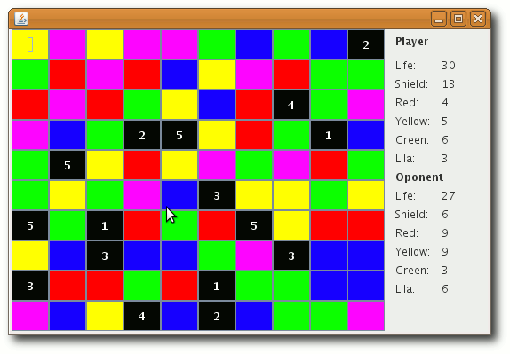
Eine GUI für den Wettbewerb.
-> Was passiert, wenn die KI eine ungültige Tauschkombination abgibt?
<- In dem Fall verliert derjenige Spieler fünf Lebens- bzw. Schildpunkte und ist nicht erneut an der Reihe. -> Können pro Teilnehmer mehrere KIs in den Wettbewerb gehen?
<- Nein, aber das eingereichte Programm kann mehrfach verbessert werden. -> Wann ist Abgabeschluss?
<- Angedacht war der 10. Mai 2009. Aufgrund des regen Interesses wurde der Stichtag auf den 24. Mai 2009 verschoben. -> Werden die KIs veröffentlicht?
<- Ja, es werden alle KIs auf den Server hochgeladen und je nachdem, wie viele es sind, auch alle vom jeweiligen Autor im Magazin kurz beschrieben. -> Eine Fünfergruppe an Steinen gibt nicht automatisch einen weiteren Zug pro Runde wie bei Puzzle-Quest, oder?
<- Nein, wir wollten das Spiel nicht zu komplex gestalten. -> Wie gestaltet sich der Wettkampf? Erprobt Ihr die Skripte und Programme im KO-Verfahren?
<- Nein, jede KI muss mit mehreren Beispielfeldern gegen alle anderen KIs antreten. Daraus wird ermittelt, wer die meisten Spiele gewonnen hat. Ein KO-Verfahren wäre zu selektiv. Weiter unten gibt es dazu nähere Ausführungen. -> Wie wird der eigentliche Wettbewerb gestartet?
<- Hier helfen ein paar Bash-Befehle: Felder erstellen:
$ for (( I=1; $I <= 100; I++ )); do ./fm-game.bin wettbewerbsfeld$I.dat create; sleep 2; doneFelder abarbeiten:
$ ( date && ( for (( I=1; $I <= 100; I++ )); do ./fm-game.bin wettbewerbsfeld$I.dat; done ) && date ) > resultsUm die results-Datei zu analysieren, hilft ein weiteres Bash-Skript. Dieses ruft man z. B. per ./check results auf:
#!/bin/bash let LINECOUNTER=0 let S=0 let U=0 let N=0 for LINE in `egrep "dead" $1` ; do if [ $LINE == "1" -o $LINE == "2" ] ; then let LINECOUNTER=$LINECOUNTER+1 let RESULT=$LINECOUNTER%2 if [ $RESULT -eq 1 ] ; then let LOOSER=$LINE else if [ $LOOSER == $LINE -a $LOOSER == "1" ] ; then let N=$N+1 elif [ $LOOSER == $LINE -a $LOOSER == "2" ] ; then let S=$S+1 else let U=$U+1 fi fi fi done echo $S " : " $U " : " $N-> Wenn ein Stein sowohl horizontal als auch vertikal in eine Dreierreihe bzw. -spalte passt, wird die Reihe oder die Spalte bevorzugt?
<- Weder noch. Sowohl die Reihe als auch die Spalte werden gleichzeitig entfernt und gewertet. Das bedeutet, dass der Stein zweifach gewertet wird. -> Darf eine KI die jeweils andere ausführen?
<- Nein, denn wenn beide KIs das machen, gibt es eine schöne Endlosschleife. Es ist aber natürlich erlaubt, aus dem vorherigen Zug des Gegners (Veränderung des Spielfeldes) dessen Taktik abzuleiten (was aber aufgrund der zufällig nachfallenden Steine sehr kompliziert werden dürfte). -> Darf eine KI eine Logdatei führen, um zu „erkennen“, wie die gegnerische KI arbeitet?
<- Gerne sogar. Solche selbstlernenden KIs sind im Wettbewerb sicher selten und sorgen für Abwechslung. -> Wenn zwei KIs gegenseitig etwa gleich stark sind und nur Unentschieden spielen, werden dann andere Kämpfe zum Ermitteln der besseren KI genommen?
<- Jede KI muss gegen jede andere KI antreten. Daraus werden Punkte für jedes gewonnene und unentschieden ausgegangene Spiel errechnet, die dann zu einer Abschlussplatzierung führen. -> Gibt es nach dem Einsenden einer KI Hinweise, wie man gegen die anderen KIs abschneidet?
<- Nein. Es wird nur das Spielergebnis auf den 100 Wettbewerbsfeldern gegen die Referenz-KI an den Autor weitergegeben. Natürlich wird aber auf Programmierfehler (falsche Züge etc.) hingewiesen. -> Darf ein Zug der KI wirklich eine Minute brauchen?
<- Nein, bitte nicht. Ein realistischer Maximalwert sind 20 Sekunden für ein ganzes Spiel. Das bedeutet, dass ein Wettbewerbslauf gegen eine andere KI circa eine Stunde dauert, was mehr als genug ist, schließlich soll auch noch gegen andere KIs gespielt werden. -> Wenn man 16 rote Steine ergattert hat, wird Schaden verursacht und der Wert fällt auf 0 oder auf 1?
<- Auf 1. Erhaltene Steine gehen nicht verloren.
Das Wertungssystem
Wie unser Leser krosmarc in einem Kommentar bemerkt hat (Link), werden die Spiele zweier KIs, die eine ähnliche Taktik haben, meistens unentschieden ausgehen. Oft ist es dann nur davon abhängig, welche Steine von oben nachrutschen, die dann über Sieg oder Niederlage einer KI entscheiden. Das bedeutet, dass es neben der Wertung für Sieg und Unentschieden eine zusätzliche Wertung geben muss. Die aktuelle Wertung wird wie folgt berechnet:- Jede KI muss gegen jede andere KI auf 100 Wettbewerbsfeldern antreten. Dabei fängt einmal KI 1, danach KI 2 auf dem gleichen Feld an.
- Gewinnt eine KI beide Spiele, zählt dies als Sieg, verliert sie beide, zählt es als Niederlage und gewinnt einmal KI 1, danach KI 2 (oder umgekehrt), ist das Spiel unentschieden.
- Für jeden Sieg einer KI gibt es 3 Punkte, für jedes Unentschieden einen Punkt.
- Spiele gegen sich selbst (die ja normalerweise in 100 Unentschieden enden), werden nicht gewertet.
- Daraus ergibt sich eine Punktzahl P für jede KI.
- Für jede KI wird aus der Zeit, die sie gegen die anderen KIs gespielt hat, der Mittelwert Mi berechnet, i=1,…,n.
- Von den Mittelwerten M1 bis Mn wird wieder der Mittelwert M′ berechnet.
- Daraus wird ein Wert R = C(M′−Mi) berechnet. Der Wert C (zur Zeit mit C=0.1) soll dabei für eine annähernde Gleichberechtigung der verschiedenen Sprachen sorgen.
- Dieser Wert R wird zur erreichten Punktzahl P aus der ersten Wertung oben addiert.
- http://www.freiesmagazin.de/20090401-programmierwettbewerb-gestartet
- http://www.freiesmagazin.de/20090409-programmierwettbewerb-faq
- http://www.freiesmagazin.de/programmierwettbewerb
- http://www.freiesmagazin.de/20090401-programmierwettbewerb-gestartet\#comment-75
- http://www.freiesmagazin.de/20090409-programmierwettbewerb-faq\#comment-76
Leserbriefe
Für Leserbriefe steht unsere E-MailadresseWorld of Goo, freiesMagazin 03/2009
Wie uns Steffen Winkler schrieb, scheiterte er bei der Einrichtung der Multi-Pointer-Unterstützung. Über diese kann man World of Goo mit mehreren Spielern an einem PC spielen, wobei jeder Spieler einen eigenen Mauscursor zum Bewegen und Klicken hat. Wichtig hierbei ist, dass diese Funktion bei der X-Server-Version 1.5 (zum Beispiel in Ubuntu 8.10 genutzt) nicht zur Verfügung steht. Laut dem 2D-Boy-Forum (Link) liegt dies daran, dass in der Version nur der X-Server Eingabegeräte direkt öffnen darf. Mit vorherigen oder späteren Versionen ist die Benutzung mehrere Mäuse gleichzeitig in World of Goo kein Problem. LinksDie Redaktion behält sich vor, Leserbriefe gegebenenfalls zu kürzen. Zum Index
Veranstaltungskalender
| Messen | ||||
| Veranstaltung | Ort | Datum | Eintritt | Link |
| Linuxwochen | Salzburg | 05.05.09 | - | http://linuxwochen.at |
| Linuxwochen | Eisenstadt | 08.05.-09.05.09 | - | http://linuxwochen.at |
| LUG Camp | Gschwender Hof | 21.05.-24.05.09 | - | http://www.lugcamp.org |
| Linuxdays | Geneva | 03.06.-05.06.09 | - | http://2009.linuxdays.ch |
| DevDusk | Frankfurt/M. | 04.06.09 | - | http://devdusk.mixxt.de |
| DevDusk | München | 04.06.09 | - | http://devdusk.mixxt.de |
| CBLOS | Flensburg | 12.-13.06.09 | frei | http://www.cblos.de |
| LinuxTag | Berlin | 24.06.-27.06.09 | 12 EUR | http://www.linuxtag.org |
| GPN8 | Karlsruhe | 26.06.-28.06.09 | frei | http://entropia.de/wiki/GPN |
| Linuxbierwanderung | Helmbrechts | 15.-23.08.2009 | - | http://lbw2009.weinbrenner.com |
| FrOSCon | Sankt Augustin | 22.-23.08.2009 | 5 EUR | http://www.froscon.de |
| openSUSE Open Day | Nürnberg | 19.09.2009 | - | http://en.opensuse.org/OpenSUSE_Conf_2009 |
Konventionen
An einigen Stellen benutzen wir Sonderzeichen mit einer bestimmten Bedeutung. Diese sind hier zusammengefasst:| $: | Shell-Prompt |
| #: | Prompt einer Root-Shell - Ubuntu-Nutzer können hier auch einfach in einer normalen Shell ein „sudo“ vor die Befehle setzen. |
| ~: | Abkürzung für das eigene Benutzerverzeichnis /home/BENUTZERNAME |
Vorschau
freiesMagazin erscheint immer am ersten Sonntag eines Monats. Die Juni-Ausgabe wird voraussichtlich am 7. Juni unter anderem mit folgenden Themen veröffentlicht:- Mobiles Linux mit Moblin
- Die Vorgeschichte von Linux
- Rezension: Just for Fun - The Story of an Accidental Revolutionary
Zum Index
Impressum ISSN 1867-7991 | ||
| freiesMagazin erscheint als PDF und HTML einmal monatlich. | ||
| Redaktionsschluss für die Juni-Ausgabe: 27. Mai 2009 | ||
| Kontakt | ||
| Postanschrift | freiesMagazin | |
| c/o Dominik Wagenführ | ||
| Beethovenstr. 9/1 | ||
| 71277 Rutesheim | ||
| Webpräsenz | http://www.freiesmagazin.de | |
| freiesMagazin-Team (Teamaufschlüsselung) | ||
| Raoul Falk | ||
| Stephan Hochhaus | ||
| Ekkehard Hollmann | ||
| Dominik Honnef | ||
| Thorsten Schmidt | ||
| Karsten Schuldt | ||
| Dominik Wagenführ | ||
| (Verantwortlicher Redakteur) | ||
| Erscheinungsdatum: 3. Mai 2009 | ||
| Autoren dieser Ausgabe | ||
| Hans-Joachim Baader | ||
| Marcel Jakobs | ||
| Udo Lembke | ||
| Moritz Lüdecke | ||
| Mathias Menzer | ||
| Thorsten Schmidt | ||
| Martin Thoma | ||
| Dominik Wagenführ | ||
| Veranstaltungen | ||
| Ronny Fischer | ||
| Logo-Design | ||
| Arne Weinberg | ||
| Lizenz | GNU FDL | |
Soweit nicht anders angegeben, stehen alle Artikel und Beiträge in freiesMagazin unter der GNU-Lizenz für freie Dokumentation (FDL). Das Copyright liegt beim jeweiligen Autor. freiesMagazin unterliegt als Gesamtwerk ebenso der GNU-Lizenz für freie Dokumentation (FDL) mit Ausnahme von Beiträgen, die unter einer anderen Lizenz hierin veröffentlicht werden. Das Copyright liegt bei Dominik Wagenführ. Es wird die Erlaubnis gewährt, das Werk/die Werke (ohne unveränderliche Abschnitte, ohne vordere und ohne hintere Umschlagtexte) unter den Bestimmungen der GNU Free Documentation License, Version 1.2 oder jeder späteren Version, veröffentlicht von der Free Software Foundation, zu kopieren, zu verteilen und/oder zu modifizieren. Die xkcd-Comics stehen separat unter der Creative Commons-Lizenz CC-BY-NC 2.5. Das Copyright liegt bei Randall Munroe.
Zum Index
File translated from TEX by TTH, version 3.85.
On 9 Jun 2009, 19:05.